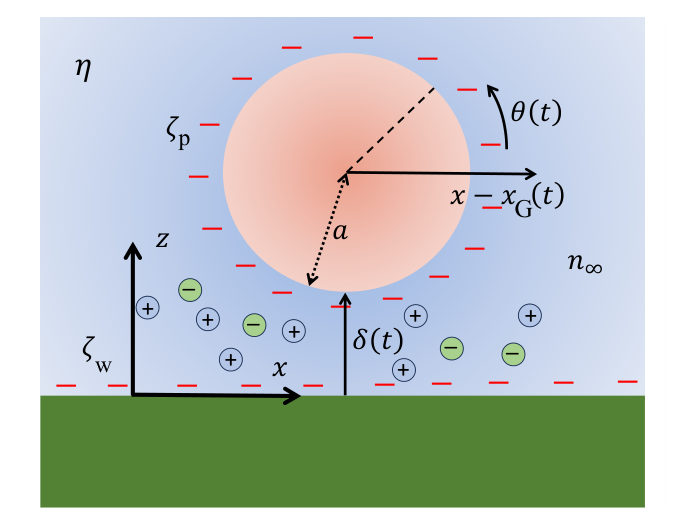
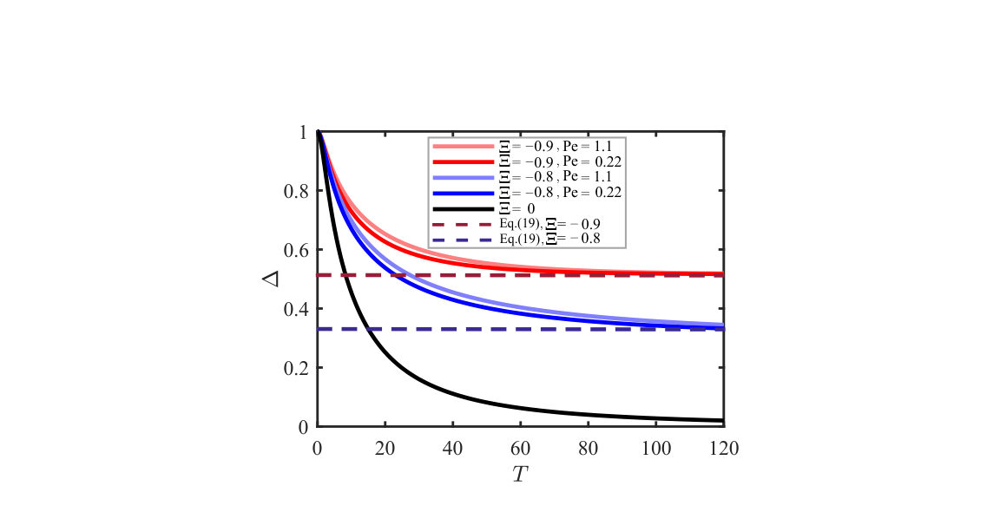
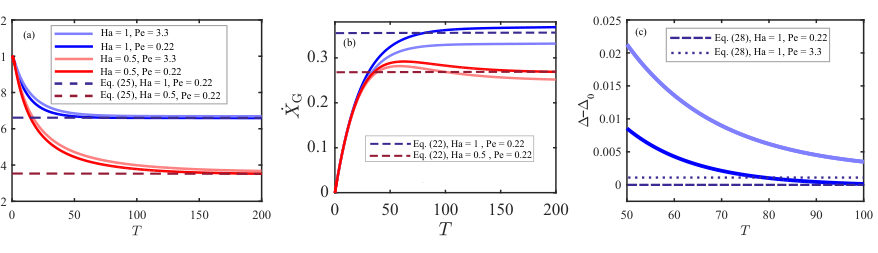
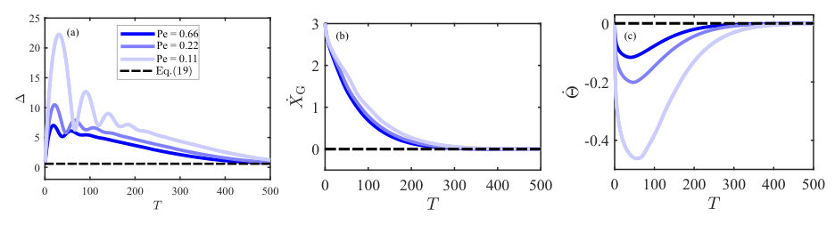
176 papers · 99 relevant · 6 highlighted
Every paper with at least one nonzero topic score, sorted by best-matching score. 🔥 marks scores ≥4/5. Click the title to jump to the full entry below; click [arXiv] to open the paper page. (secondary) marks papers from de-prioritized cond-mat archives.
Rydberg arrays 5/5 · 🔥 QC/QI experiment 4/5 · 🔥 analog quantum simulation 4/5 · 🔥 entanglement & information structure 4/5 · 🔥 non-equilibrium dynamics 4/5 · quantum measurements 3/5 · exotic spin models in light-matter 2/5 · measurement-induced transitions 2/5 · non-equilibrium universality 2/5 · scars & prethermalization 2/5scars & prethermalization 5/5 · 🔥 Rydberg arrays 4/5 · 🔥 non-equilibrium dynamics 4/5 · analog quantum simulation 3/5 · driven-dissipative phase transition 3/5 · entanglement & information structure 3/5 · exotic spin models in light-matter 3/5analog quantum simulation 4/5 · 🔥 driven-dissipative phase transition 4/5 · Tavis-Cummings & cavity-many-emitter 3/5 · correlated cavity matter 3/5 · exotic spin models in light-matter 3/5 · non-equilibrium dynamics 3/5 · non-equilibrium universality 3/5 · quantum optics experiment 3/5 · Keldysh / 2PI / non-Gaussian methods 2/5 · methods for driven-dissipative 2/5 · entanglement & information structure 1/5driven-dissipative phase transition 4/5 · 🔥 entanglement & information structure 4/5 · 🔥 measurement-induced transitions 4/5 · 🔥 non-equilibrium universality 4/5 · non-equilibrium dynamics 3/5 · methods for driven-dissipative 2/5 · quantum measurements 2/5(secondary) — 🔥 driven-dissipative phase transition 4/5 · 🔥 non-equilibrium dynamics 4/5 · 🔥 quantum optics experiment 4/5 · Keldysh / 2PI / non-Gaussian methods 3/5 · methods for driven-dissipative 3/5 · non-equilibrium universality 3/5quantum measurements 4/5 · correlated / nonlocal dissipation 3/5 · driven-dissipative phase transition 3/5 · entanglement & information structure 3/5 · methods for driven-dissipative 3/5 · measurement-induced transitions 2/5 · non-equilibrium dynamics 2/5driven-dissipative phase transition 4/5 · entanglement & information structure 3/5 · methods for driven-dissipative 3/5 · non-equilibrium dynamics 3/5 · Keldysh / 2PI / non-Gaussian methods 2/5 · correlated / nonlocal dissipation 2/5 · non-equilibrium universality 2/5QC/QI experiment 4/5 · 🔥 quantum optics experiment 4/5 · quantum measurements 3/5 · entanglement & information structure 2/5 · interference shaping light 2/5(secondary) — 🔥 QC/QI experiment 4/5 · 🔥 quantum optics experiment 4/5 · quantum measurements 3/5 · spintronics-quantum-optics interface 3/5driven-dissipative phase transition 4/5 · 🔥 non-equilibrium dynamics 4/5 · non-equilibrium universality 3/5 · quantum measurements 2/5non-equilibrium dynamics 4/5 · driven-dissipative phase transition 3/5 · entanglement & information structure 2/5 · non-equilibrium universality 2/5 · quantum measurements 2/5Rydberg arrays 4/5 · analog quantum simulation 3/5 · entanglement & information structure 3/5 · exotic spin models in light-matter 3/5QC/QI experiment 4/5 · 🔥 quantum optics experiment 4/5 · quantum measurements 3/5 · interference shaping light 2/5non-equilibrium dynamics 4/5 · driven-dissipative phase transition 3/5 · methods for driven-dissipative 3/5 · entanglement & information structure 2/5QC/QI experiment 4/5 · 🔥 quantum optics experiment 4/5 · quantum measurements 2/5 · spintronics-quantum-optics interface 2/5QC/QI experiment 4/5 · 🔥 spintronics-quantum-optics interface 4/5 · non-equilibrium dynamics 2/5 · quantum measurements 2/5QC/QI experiment 4/5 · 🔥 quantum optics experiment 4/5 · entanglement & information structure 2/5 · quantum measurements 2/5methods for driven-dissipative 4/5 · non-equilibrium dynamics 3/5 · driven-dissipative phase transition 2/5 · entanglement & information structure 2/5(secondary) — 🔥 spintronics-quantum-optics interface 4/5 · QC/QI experiment 3/5 · correlated / nonlocal dissipation 2/5 · quantum measurements 2/5QC/QI experiment 4/5 · non-equilibrium dynamics 2/5 · quantum measurements 2/5 · quantum optics experiment 2/5QC/QI experiment 4/5 · 🔥 quantum optics experiment 4/5 · interference shaping light 2/5QC/QI experiment 4/5 · spintronics-quantum-optics interface 3/5 · quantum optics experiment 2/5spintronics-quantum-optics interface 4/5 · interference shaping light 3/5 · methods for driven-dissipative 2/5spintronics-quantum-optics interface 4/5 · QC/QI experiment 3/5 · quantum measurements 2/5quantum measurements 4/5 · entanglement & information structure 2/5 · methods for driven-dissipative 2/5QC/QI experiment 4/5 · entanglement & information structure 2/5 · non-equilibrium dynamics 2/5entanglement & information structure 4/5 · 🔥 non-equilibrium dynamics 4/5QC/QI experiment 4/5 · 🔥 quantum optics experiment 4/5non-equilibrium dynamics 4/5 · analog quantum simulation 2/5 · exotic spin models in light-matter 2/5analog quantum simulation 4/5 · exotic spin models in light-matter 3/5QC/QI experiment 4/5 · quantum measurements 3/5quantum optics experiment 4/5 · QC/QI experiment 3/5QC/QI experiment 4/5 · quantum optics experiment 2/5quantum measurements 4/5 · entanglement & information structure 2/5methods for driven-dissipative 4/5 · non-equilibrium dynamics 2/5methods for driven-dissipative 4/5QC/QI experiment 4/5(secondary) — 🔥 spintronics-quantum-optics interface 4/5QC/QI experiment 4/5QC/QI experiment 4/5entanglement & information structure 3/5 · non-equilibrium dynamics 3/5 · Keldysh / 2PI / non-Gaussian methods 2/5 · correlated / nonlocal dissipation 2/5 · methods for driven-dissipative 2/5methods for driven-dissipative 3/5 · correlated / nonlocal dissipation 2/5 · driven-dissipative phase transition 2/5 · entanglement & information structure 2/5 · non-equilibrium dynamics 2/5methods for driven-dissipative 3/5 · Tavis-Cummings & cavity-many-emitter 2/5 · driven-dissipative phase transition 2/5 · non-equilibrium dynamics 2/5 · non-equilibrium universality 2/5methods for driven-dissipative 3/5 · non-equilibrium dynamics 3/5 · entanglement & information structure 2/5 · quantum measurements 2/5methods for driven-dissipative 3/5 · non-equilibrium dynamics 3/5 · correlated / nonlocal dissipation 2/5 · entanglement & information structure 2/5entanglement & information structure 3/5 · correlated / nonlocal dissipation 2/5 · non-equilibrium dynamics 2/5 · quantum measurements 2/5interference shaping light 3/5 · quantum optics experiment 3/5 · QC/QI experiment 2/5non-equilibrium dynamics 3/5 · non-equilibrium universality 3/5methods for driven-dissipative 3/5 · quantum measurements 3/5(secondary) — spintronics-quantum-optics interface 3/5 · QC/QI experiment 2/5QC/QI experiment 3/5 · methods for driven-dissipative 2/5(secondary) — non-equilibrium dynamics 3/5 · spintronics-quantum-optics interface 2/5quantum measurements 3/5 · Keldysh / 2PI / non-Gaussian methods 2/5entanglement & information structure 3/5 · Frenkel-Kontorova 2/5(secondary) — entanglement & information structure 3/5 · Keldysh / 2PI / non-Gaussian methods 2/5quantum measurements 3/5 · entanglement & information structure 2/5non-equilibrium dynamics 3/5 · non-equilibrium universality 2/5Rydberg arrays 3/5quantum measurements 3/5entanglement & information structure 3/5correlated / nonlocal dissipation 2/5 · quantum measurements 2/5 · spintronics-quantum-optics interface 2/5QC/QI experiment 2/5 · quantum optics experiment 2/5 · spintronics-quantum-optics interface 1/5analog quantum simulation 2/5 · interference shaping light 2/5analog quantum simulation 2/5 · non-equilibrium dynamics 2/5(secondary) — quantum optics experiment 2/5 · spintronics-quantum-optics interface 2/5(secondary) — driven-dissipative phase transition 2/5 · non-equilibrium dynamics 2/5(secondary) — Keldysh / 2PI / non-Gaussian methods 2/5 · non-equilibrium dynamics 2/5non-equilibrium dynamics 2/5 · non-equilibrium universality 2/5QC/QI experiment 2/5 · Rydberg arrays 1/5 · quantum measurements 1/5correlated / nonlocal dissipation 2/5 · entanglement & information structure 2/5QC/QI experiment 2/5 · quantum optics experiment 2/5non-equilibrium dynamics 2/5 · non-equilibrium universality 2/5analog quantum simulation 2/5 · methods for driven-dissipative 2/5quantum measurements 2/5methods for driven-dissipative 2/5QC/QI experiment 2/5entanglement & information structure 2/5(secondary) — non-equilibrium dynamics 2/5Keldysh / 2PI / non-Gaussian methods 2/5Keldysh / 2PI / non-Gaussian methods 2/5entanglement & information structure 2/5entanglement & information structure 2/5entanglement & information structure 2/5(secondary) — non-equilibrium dynamics 2/5methods for driven-dissipative 2/5QC/QI experiment 2/5entanglement & information structure 2/5spintronics-quantum-optics interface 2/5Keldysh / 2PI / non-Gaussian methods 2/5methods for driven-dissipative 2/5Keldysh / 2PI / non-Gaussian methods 2/5methods for driven-dissipative 2/5entanglement & information structure 2/5entanglement & information structure 2/5spintronics-quantum-optics interface 2/5(secondary) — non-equilibrium dynamics 2/5analog quantum simulation 2/5Kondo & dissipative impurity 1/5quantum measurements 1/5Papers by authors on your watch list. Click the title to jump to the full entry below; click [arXiv] to open the paper page.
Papers from quant-ph and your primary cond-mat archives (quant-gas, stat-mech, str-el, dis-nn). Highlighted papers (⭐) come first, then everything else sorted by topic-relevance score, highest first.
← Index · ← Previous · Next →
Authors: Alessandro Berti, Francesco Ghisoni
Type: theory · Category: quantum information and computing · PDF: https://arxiv.org/pdf/2604.25644v1
Analysis basis: full PDF text, analyzed in chunks
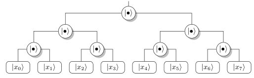
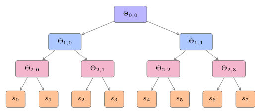
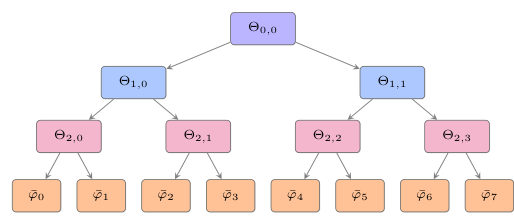
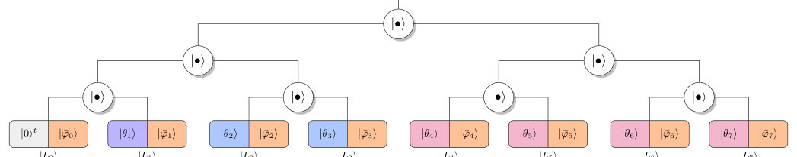
Main problem. Efficiently preparing complex-valued quantum states (amplitude and phase encoding) from large classical datasets while minimizing the computational overhead of reversible arithmetic on the QPU.
Main result. The authors present a framework that achieves polylogarithmic BBQRAM query complexity for complex matrices by replacing expensive quantum subroutines with classical precomputation of rotation angles and phases.
Method. A two-step procedure involving magnitude preparation via a cascade of controlled Ry gates and phase encoding via a cascade of controlled P gates, utilizing a precomputed 'complex angle tree' structure.
Summary. This paper improves the efficiency of loading complex-valued classical data into quantum computers using a specific QRAM architecture. By precomputing rotation angles and phases classically, the authors eliminate the need for complex reversible arithmetic (like square roots) on the quantum processor. The resulting method maintains efficient polylogarithmic query time while reducing the required quantum hardware resources. This is a significant step toward practical quantum machine learning and quantum linear algebra applications.
Model / system. A hardware-aware Bucket Brigade QRAM (BBQRAM) architecture interacting with a Quantum Processing Unit (QPU) using a segment tree data structure.
Key observables. Query complexity, QPU qubit count, gate count, and state fidelity/precision.
Important parameters / regimes. Matrix dimensions (M, N), total entries (K), fixed-point precision (t), and target error (eta).
Assumptions / limitations. Assumes a fault-tolerant architecture, fixed-point precision, and that classical preprocessing/loading of the QRAM is amortized over repeated preparations.
Figures summary. Figure 1 shows controlled rotation cascades; Figure 2 depicts the BBQRAM architecture; Figure 3 illustrates the Angle Tree and sign bit integration; Figure 4 shows the complex angle tree structure; Figure 5 shows the BBQRAM mapping for complex entries.
Paper structure. The paper introduces the problem of state preparation, presents an improved architecture-aware framework for complex values, details the classical precomputation and two-step quantum algorithm, provides resource complexity comparisons, and discusses limitations and future work.
Efficient quantum state preparation is a critical component in quantum algorithms that process large classical data, and it is fundamental to realizing quantum advantage in domains such as machine learning, quantum linear algebra, and quantum finance. Building on the framework of~\cite{berti2025efficient}, which integrates Bucket Brigade QRAM (BBQRAM) with a segment tree to achieve amplitude encoding in polylogarithmic query time, we present two improvements within the same architecture-aware framework. First, we remove the $U_{2\mathrm{CR}}$ subroutine by classically precomputing the rotation angles determined by the segment tree and storing these angles directly in the BBQRAM cells. The tradeoff is that the classically loaded QRAM stores precomputed fixed-point angles rather than raw subtree weights. Second, we extend the construction to complex-valued matrices $A \in \mathbb{C}^{M \times N}$ by storing a leaf phase alongside each precomputed rotation angle and using a two-step magnitude-then-phase procedure; the real signed case is naturally subsumed as a one-bit phase specialization. At unchanged $\mathcal{O}(\log_2^2(MN))$ BBQRAM query complexity, the QPU procedure reduces to BBQRAM retrievals and controlled-rotation cascades, with $\mathcal{O}(MN)$ memory cells per matrix and no reversible arithmetic on the QPU.
Authors: Anirban Chatterjee, Yacine Amarouchene, Thomas Salez
Type: theory · Category: statistical mechanics · PDF: https://arxiv.org/pdf/2604.25350v1
Analysis basis: full PDF text, analyzed in chunks




Main problem. Characterizing the electrohydrodynamic motion and the emergence of symmetry-breaking lift forces for a charged cylinder moving near a charged boundary in an electrolyte.
Main result. The development of an electrohydrodynamic lubrication framework that predicts a generalized electroviscous lift force and an extended mobility matrix incorporating surface charges and ions.
Method. The authors use lubrication theory, Debye-Huckel electrostatics, and Nernst-Planck electrokinetics to derive coupled nonlinear ordinary differential equations, which are analyzed via numerical simulations and asymptotic analysis.
Summary. This paper establishes a theoretical framework for understanding how electric charges on particles and surfaces influence their motion in fluids. By combining fluid mechanics with electrokinetics, the authors show that moving ions create an extra 'lift' force that pushes a cylinder away from a wall. The study provides new mathematical tools to predict how particles will move, slide, or rotate in industrial and biological environments where electric fields and ions are present.
Model / system. An infinite rigid cylinder of radius 'a' moving in a Newtonian electrolyte near a rigid flat wall, considering the coupling of hydrodynamic, electrostatic, and electrokinetic forces.
Key observables. Normal distance (gap height), longitudinal position, rotation, streaming potential, and electroviscous lift force.
Important parameters / regimes. Debye screening length (kappa inverse), Péclet number (Pe), Hartmann number (Ha), surface potentials (zeta potentials), and the lubrication parameter (epsilon).
Assumptions / limitations. Small-gap lubrication approximation (epsilon << 1), linearized Poisson-Boltzmann/Debye-Huckel electrostatics, and an open-circuit condition (no net current).
Figures summary. Figure 1 shows a schematic of the cylinder, wall, and electrolyte; Figure 4 displays the time evolution of dimensionless distance, longitudinal velocity, and angular velocity showing damped oscillations toward equilibrium.
Paper structure. The paper introduces the physical problem, defines the mathematical framework (hydrodynamics, electrostatics, electrokinetics), derives the coupled equations of motion, presents numerical results for various motion regimes (sedimentation and sliding), and concludes with asymptotic analysis and validation.
The free motion of charged colloids within ionic solutions and in the vicinity of charged boundaries, is a phenomenon that occurs in various natural, biological and industrial settings. Here, we develop an electrohydrodynamic lubrication theoretical framework, in order to characterize such a motion in the case of an infinite rigid cylinder near a rigid wall. Combining hydrodynamic lubrication theory, Debye-H\''uckel electrostatics, and Nernst-Planck electrokinetics, we derive the three coupled equations of motion for the normal, longitudinal and rotational degrees of freedom of the cylinder, which are then investigated numerically and through asymptotic analysis. Our results reveal complex behaviours, beyond existing asymptotic electroviscous-lift expressions, and extend the classical Faxen-Brenner-like mobility matrix when surface charges and dissolved ions are incorporated.
Authors: Yuki Yanagi, Michi-To Suzuki
Type: theory · Category: strongly correlated electrons · PDF: https://arxiv.org/pdf/2604.25539v1
Analysis basis: full PDF text, analyzed in chunks
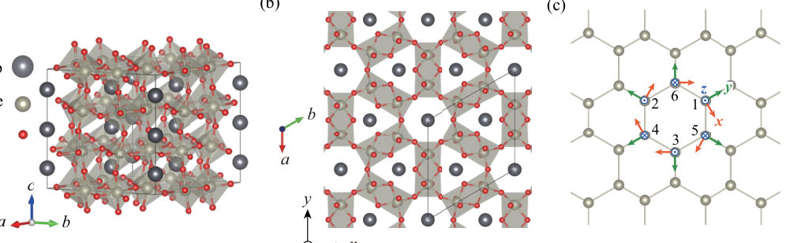
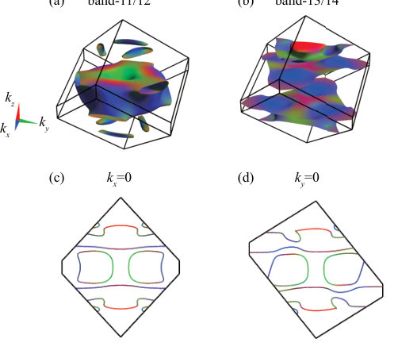

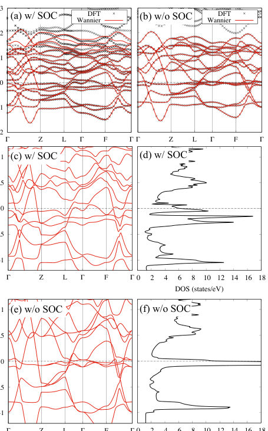
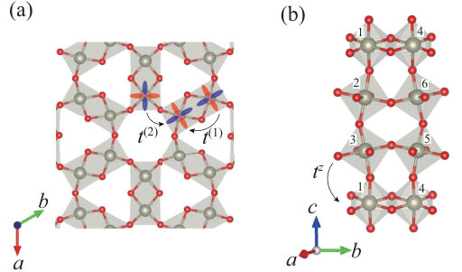
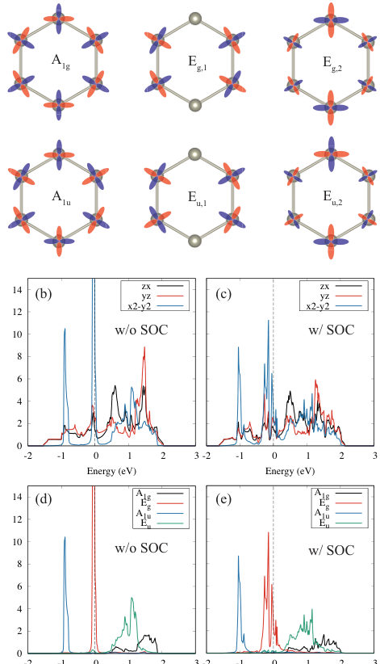
Main problem. Understanding the microscopic origin of the electronic structure, one-dimensionality, and successive structural phase transitions in the spin-orbit-coupled metal candidate PbRe2O6.
Main result. The study identifies that the coexistence of quasi-1D Fermi surfaces (from d_yz and d_zx orbitals) and flat bands (from molecular orbital formation of d_v orbitals) provides a microscopic origin for the material's observed phase transitions and anisotropic transport.
Method. First-principles density functional theory (DFT) calculations using the WIEN2K code, combined with Wannier function construction (Wannier90) and a 36-orbital tight-binding model.
Summary. This paper investigates the electronic properties of the spin-orbit-coupled metal PbRe2O6 using first-principles calculations. It reveals that the material's electronic structure is characterized by both one-dimensional Fermi surfaces and flat bands arising from molecular orbital formation. These features are shown to be responsible for the highly anisotropic charge transport and the successive structural phase transitions observed experimentally. The study provides a microscopic link between orbital physics and macroscopic transport phenomena.
Model / system. The physical system is PbRe2O6, a 5d-electron compound with a centrosymmetric trigonal structure that undergoes structural phase transitions. The model includes Re-t2g orbitals and describes molecular orbital formation on Re-hexagon networks.
Key observables. Fermi surfaces, density of states (DOS), charge transport anisotropy, and hopping parameters.
Important parameters / regimes. Spin-orbit coupling (SOC) strength, hopping parameters (e.g., |t_v,v(1)/t_v,v(2)| ~ 0.08), and structural transition temperatures (T_s1 ~ 265 K, T_s2 ~ 123 K).
Assumptions / limitations. The molecular orbital picture remains valid even when spin-orbit coupling lifts the degeneracy of the Eg states.
Figures summary. Fig 1 shows crystal structures; Fig 2 displays band structures and DOS with and without SOC; Fig 3 shows orbital-weighted Fermi surfaces; Fig 4 illustrates molecular orbital wavefunctions and DOS.
Paper structure. The paper introduces the material and its properties, presents DFT-calculated band structures and DOS, analyzes the orbital-dependent hopping and dimensionality, describes the formation of molecular orbitals, and concludes by linking these electronic features to observed phase transitions.
We present a first-principles investigation of the electronic structure of the inversion-symmetry-broken spin-orbit-coupled metal candidate PbRe$_2$O$_6$. Our calculations reveal that the Fermi surfaces derived from the $d_{yz}$ and $d_{zx}$ orbitals exhibit pronounced one-dimensional characteristics, which naturally account for the highly anisotropic charge transport observed experimentally. In addition, the $d_{x^2-y^2}$ orbitals on each Re haxagon form molecular orbitals, where the resulting $E_g$ molecular states generate nearly dispersionless bands in close proximity to the Fermi level. The coexistence of these quasi-1D Fermi surfaces and molecular-orbital-induced flat bands provides a possible microscopic origin for the successive phase transitions observed in PbRe$_2$O$_6$.
Authors: Hiroki Kutsuma, Taro Yamashita
Type: both · Category: other · PDF: https://arxiv.org/pdf/2604.25425v1
Analysis basis: full PDF text, analyzed in chunks
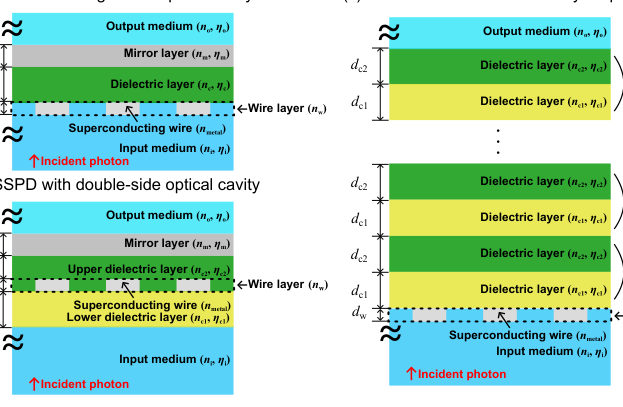
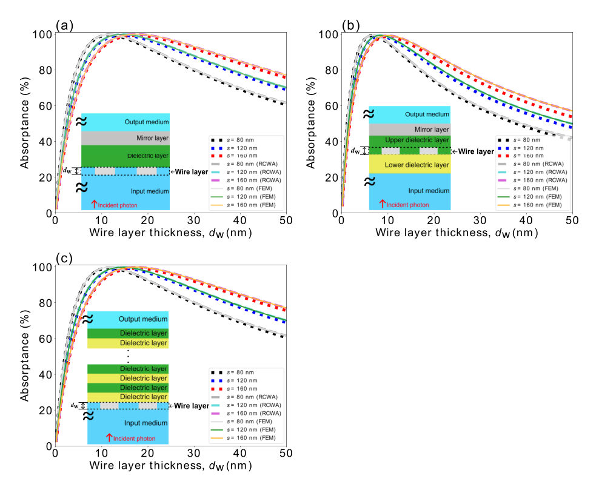
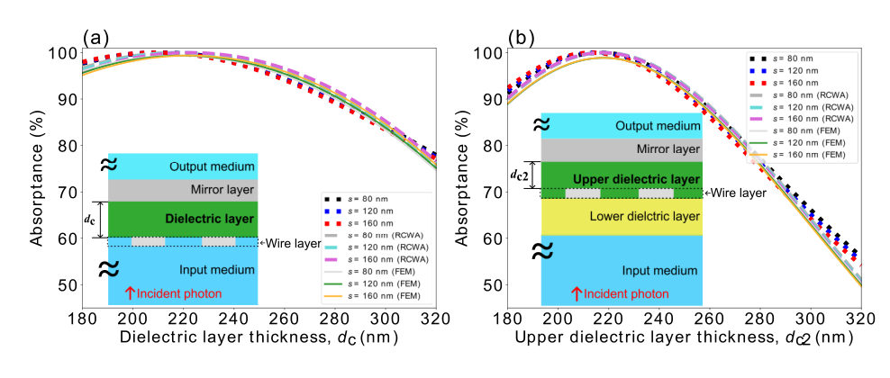
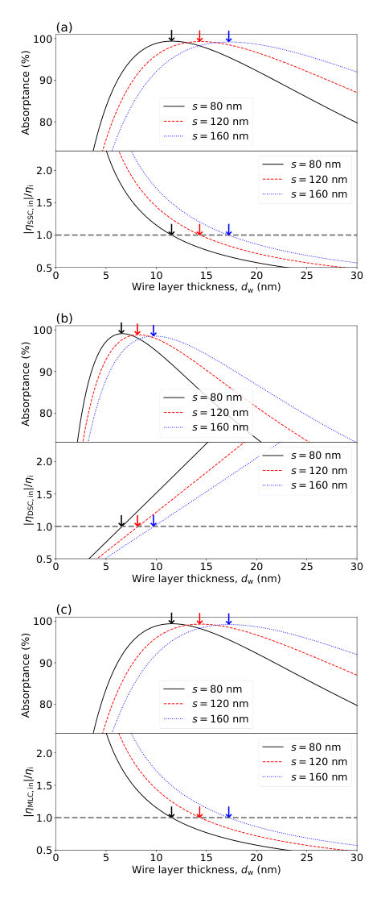
Main problem. The physical mechanism by which optical cavities in superconducting strip single photon detectors (SSPDs) achieve maximum photon absorptance is not clearly understood, particularly regarding how different cavity configurations affect performance.
Main result. The study demonstrates that maximum absorptance is achieved through impedance matching between the SSPD and the input medium, and provides analytical formulae for optimal layer thicknesses.
Method. The authors use a transmission line model (transfer matrix formalism) and an impedance model to derive analytical results, which are then validated against numerical simulations using RCWA (S4) and FEM (COMSOL).
Summary. This paper provides a theoretical framework to understand and design optical cavities for superconducting single-photon detectors. By applying transmission line and impedance matching principles, the authors derive analytical expressions for maximizing photon absorption. They show that the optimal performance occurs when the detector's input impedance matches the incident medium. The findings are validated through rigorous numerical simulations and offer a practical design methodology for high-efficiency superconducting detectors.
Model / system. The system consists of various SSPD configurations, including single-side, double-side, and dielectric multi-layer optical cavities, comprising superconducting wires, dielectric layers, and metallic mirrors.
Key observables. Absorptance (A), reflection coefficient (r), transmission coefficient (t), and input impedance ratio (|eta_in|/eta_i).
Important parameters / regimes. Wire and dielectric layer thicknesses (dw, dc), filling factor (f), refractive index (n), and wavelength (1550 nm).
Assumptions / limitations. Assumptions include the metallic mirror acting as a Perfect Electrical Conductor (PEC) or having high imaginary refractive index, photon wavelength being much longer or shorter than wire width, and negligible loss in the dielectric layer.
Figures summary. Figure 1 shows schematics of the three cavity configurations; Figure 2 compares absorptance vs. wire thickness for different configurations; Figure 3 shows absorptance vs. dielectric thickness; Figure 4 illustrates the relationship between absorptance and the impedance ratio.
Paper structure. The paper introduces the problem, presents the transmission line and impedance models, derives analytical formulae for various cavity types, validates these models via numerical simulations, and concludes with a proposed design workflow.
We clarified the physical mechanism of superconducting strip single photon detectors (SSPDs) with optical cavities by using transmission line and impedance models. By introducing the transmission line model, we derived the analytical formulae for the absorptance of SSPDs with optical cavities. We compared the absorptance obtained from the analytical formulae for SSPDs with single-side, double-side, and dielectric multi-layer optical cavities against the results of numerical simulations. The comparison showed that the results were nearly identical. By introducing the impedance model, it was clearly shown that the SSPDs with optical cavities achieved the maximum absorptance when their input impedance of the SSPDs with optical cavities matched the impedance of the input medium. The design concepts proposed in this study are applicable to other superconducting detectors, such as microwave kinetic inductance detectors and transition-edge sensors.
Authors: A. Trokhymchuk, V. Hordiichuk, R. Melnyk, I. Nezbeda
Type: theory · Category: statistical mechanics · PDF: https://arxiv.org/pdf/2604.25882v1
Analysis basis: full PDF text, analyzed in chunks
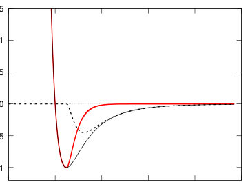
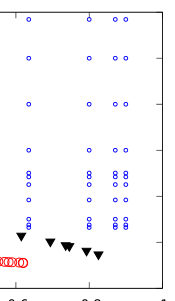
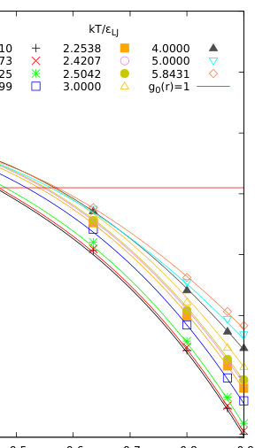
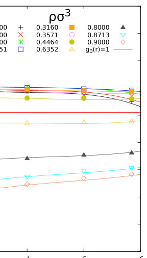
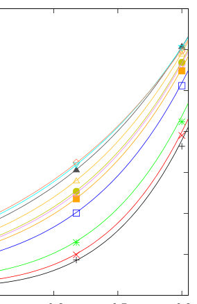
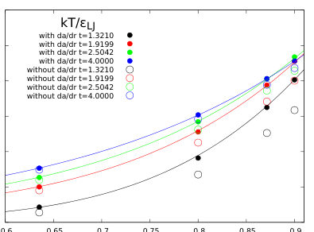
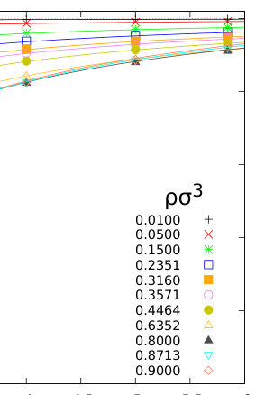
Main problem. The failure of classical first-order perturbation theories (like WCA) to accurately describe the thermodynamics of Lennard-Jones fluids due to the overlap of the perturbation term with the region of strong structural correlations.
Main result. A non-classical approach using a range-based decomposition—where the reference system includes the entire short-range part of the potential—provides a highly accurate equation of state by transforming the perturbation into a small, near-mean-field quantity.
Method. The authors use Molecular Dynamics simulations to evaluate a first-order perturbation theory where the reference system is defined by a short-range potential, and the long-range tail is treated as a perturbation, including necessary density and temperature derivatives for thermodynamic consistency.
Summary. This paper proposes a new way to split the Lennard-Jones potential for use in first-order perturbation theory. Instead of splitting by interaction strength (repulsion vs. attraction), it splits by interaction range, putting all short-range interactions into the reference system. This makes the remaining perturbation term much smaller and easier to model as a mean-field-like quantity. The study proves that including the density derivatives of this new term is essential for an accurate and thermodynamically consistent description of the fluid.
Model / system. The system is a Lennard-Jones (LJ) fluid, characterized by a pairwise additive potential with repulsive and attractive components, studied in the supercritical thermodynamic domain.
Key observables. Helmholtz free energy, pressure, internal energy, and the perturbation contribution a(T, rho).
Important parameters / regimes. Supercritical temperature and density ranges, Lennard-Jones parameters epsilon and sigma, and the decay parameters of the two-Yukawa reference potential.
Assumptions / limitations. The perturbation contribution remains small and smoothly varying because it is restricted to the long-range tail, and the success of the theory depends on the reference system capturing the local structure.
Figures summary. Figure 1 compares CA and NCA decomposition strategies; Figure 2 shows a phase diagram of the reference system; Figure 3 and 4 show the density and temperature dependence of the perturbation term; Figure 5 and 6 demonstrate the accuracy of the resulting pressure and the necessity of the density-derivative term; Figure 7 shows the accuracy of the internal energy.
Paper structure. The paper introduces the problem of classical perturbation theory limitations, proposes a non-classical range-based decomposition, details the simulation-based evaluation of the new reference system, presents the results for the perturbation term's behavior, and concludes by demonstrating thermodynamic consistency and accuracy against benchmark data.
The equation of state and, more generally, the thermodynamics of the Lennard-Jones fluid have long served as a benchmark problem in the statistical theory of fluids. Among available theoretical approaches, first-order perturbation theory occupies a special position: only at this level does the correction to the Helmholtz free energy admit an exact statistical-mechanical expression. In this work, we present a systematic, simulation-based assessment of a non-classical first-order perturbation theory in which the reference system incorporates the entire short-range part of the interaction, while the perturbation is confined to the remaining long-range tail. We show that this range-based decomposition transforms the perturbation contribution into a small, smoothly varying, near-mean-field quantity over a broad supercritical thermodynamic domain. When its density and temperature derivatives are consistently retained, the resulting equation of state reproduces high-accuracy reference data with excellent fidelity. The results demonstrate that the success of first-order perturbation theory is governed primarily by the physical content of the reference system and by the consistent treatment of its state dependence, rather than by the formal truncation order of the expansion.
Authors: Reece Robertson, Ameya Bhave
Type: theory · Category: quantum information and computing · PDF: https://arxiv.org/pdf/2604.25148v1
Analysis basis: full PDF text, analyzed in chunks
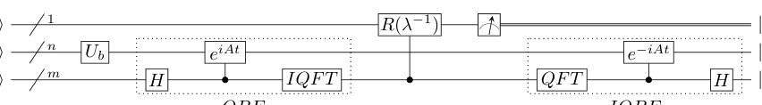
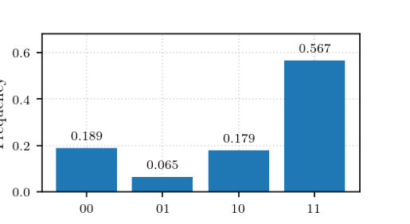
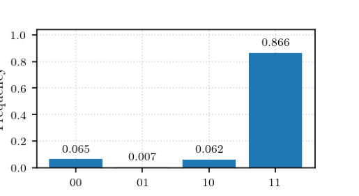
Main problem. The challenge of efficiently replicating the behavior of the HHL quantum algorithm on classical hardware, specifically overcoming the exponential scaling of traditional state-vector simulation with respect to the number of counting qubits.
Main result. The proposed emulation method achieves a runtime advantage over the Intel Quantum Simulator for small linear systems by removing the exponential dependence on the number of counting qubits used for eigenvalue accuracy.
Method. An extension of the Unconventional Noiseless Intermediate Quantum Emulator (UNIQuE) that bypasses intermediate quantum circuit steps like QPE and instead directly computes the final probability distribution by diagonalizing the matrix A.
Summary. This paper introduces a new classical emulation method for the HHL quantum algorithm that scales more efficiently than standard state-vector simulation. By focusing on reproducing the final output distribution rather than simulating every intermediate gate, the authors eliminate the exponential cost associated with the precision of eigenvalue estimation. Benchmarks show that this emulator provides a significant speedup for small linear systems while maintaining high accuracy. This approach offers a more scalable way to verify and study the outcomes of HHL-type algorithms on classical hardware.
Model / system. The HHL algorithm applied to an s-sparse, N x N invertible Hermitian matrix A, involving ancilla, solution, and clock registers.
Key observables. The probability distribution of the final state and the ratio of probabilities of measuring the ancilla qubit in the |1> state to estimate the solution vector.
Important parameters / regimes. The size of the linear system (N), the condition number (kappa), the error tolerance (epsilon), and the number of counting qubits (m).
Assumptions / limitations. The study assumes a noiseless/perfect quantum computing environment and focuses on replicating the final sampling distribution rather than intermediate gate operations.
Figures summary. Figure 1 shows the HHL quantum circuit diagram; Figure 2 and 3 present histograms comparing simulation and emulation results for different qubit sizes to demonstrate accuracy and stability.
Paper structure. The paper introduces the problem of HHL simulation, describes the proposed UNIQuE extension, details the emulation methodology, provides a comparative benchmark against the Intel Quantum Simulator, and concludes with error analysis and scaling results.
In an extension of the Unconventional Noiseless Intermediate Quantum Emulator, this work introduces a classical emulation of the quantum Harrow-Hassidim-Lloyd algorithm for sampling from the solution space of linear systems. The emulated HHL algorithm scales exponentially with the number of qubits required to represent the linear system, which is an advantage over the state vector simulation of the HHL algorithm, which scales exponentially as a function of both the size of the linear system and the magnitude of its largest (scaled) eigenvalue. We benchmark our emulator by comparing it with the Intel Quantum Simulator and demonstrate a runtime advantage for small linear systems.
Authors: Carl Jonas Linnemann, Kim-Khuong Huynh, Davide Ceresoli, Martin Bremholm
Type: both · Category: strongly correlated electrons · PDF: https://arxiv.org/pdf/2604.25324v1
Analysis basis: full PDF text, analyzed in chunks
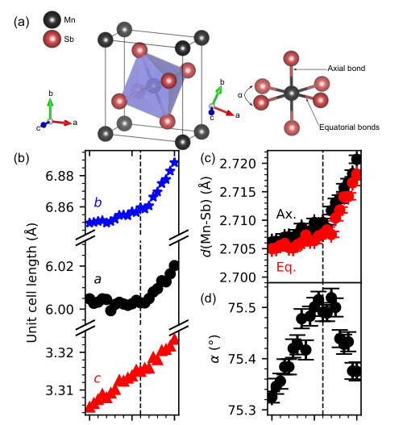
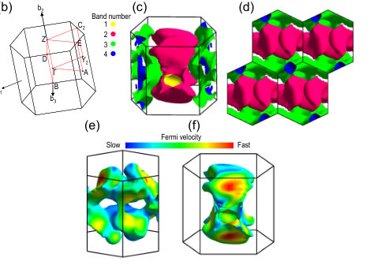
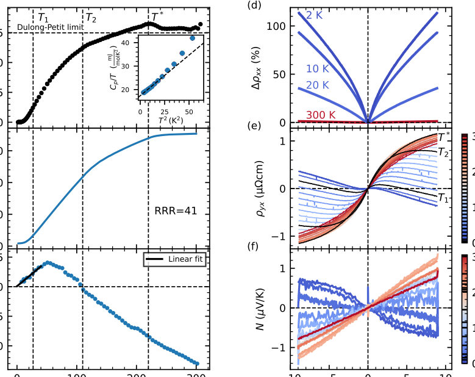
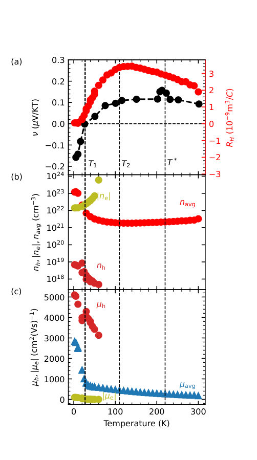
Main problem. The study aims to characterize the electronic and transport properties of MnSb2, a previously under-investigated member of the TMSb2 marcasite family, and to determine if it possesses a flat band at the Fermi level.
Main result. The researchers successfully synthesized MnSb2 using high pressure and confirmed the presence of a flat band at the Fermi level, making it the first marcasite in this series to exhibit such a feature at the Fermi energy.
Method. The study combines high-pressure/high-temperature synthesis with structural characterization (SC-XRD, P-XRD), electronic transport measurements (resistivity, Hall effect, Seebeck, Nernst), heat capacity, and DFT calculations.
Summary. This paper reports the first successful synthesis of the marcasite compound MnSb2 using high-pressure techniques. The authors demonstrate that, unlike other members of its family which are semiconductors, MnSb2 is a multi-band metal. Crucially, they identify a flat band located at the Fermi level, which leads to heavy-electron behavior. The study also details several temperature-dependent phase transitions and transport anomalies.
Model / system. The physical system is MnSb2, a multi-band metal with an orthorhombic marcasite structure. It is characterized by Mn 3d orbitals and is predicted to have an antiferromagnetic ground state.
Key observables. Electrical resistivity, Hall resistivity, Seebeck coefficient, Nernst signal, heat capacity, Sommerfeld constant (gamma), and lattice parameters.
Important parameters / regimes. Temperature-dependent phase transitions at 230 K, 110 K, and 30 K; Sommerfeld constant gamma = 17.4 mJ/(mol K^2); carrier masses (electron-like mass approx 11me).
Assumptions / limitations. The analysis assumes the validity of the two-band model for extracting carrier dynamics and uses DFT to model the electronic band structure and magnetic stability.
Figures summary. Figure 2 shows the calculated electronic band structure, Brillouin zone, and Fermi surface; Figure 3 displays measured physical properties including heat capacity and resistivity.
Paper structure. The paper begins with the synthesis and structural characterization of MnSb2, followed by an investigation of its electronic transport and thermodynamic properties, and concludes with a comparison between experimental results and DFT calculations.
Marcasite compounds formed between $3d$ transition metals and antimony (TMSb$_2$) have been heavily studied due to their intriguing physical properties. For instance they can possess flat bands in their electronic structure, however due to their semiconducting nature, these intriguing electronic states often reside far from the Fermi level, and observations of their properties remained elusive. In addition, the studies of the marcasite series is incomplete across the $3d$ TMs as the electronic and physical properties of MnSb$_2$ are little studied, as its synthesis requires the application of pressure. We successfully used a high-pressure approach to obtain MnSb$_2$, the last TMSb$_2$ that was still missing, and confirm its marcasite structure. The results of our measurements of electronic transport properties are consistent with the manifestation of a flat band that resides at the vicinity of the Fermi level and being in good agreement with the DFT band structure.
Authors: Kien X. Nguyen, Ilya Safro
Type: theory · Category: quantum information and computing · PDF: https://arxiv.org/pdf/2604.25275v1
Analysis basis: full PDF text, analyzed in chunks
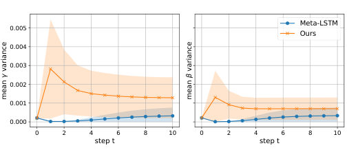
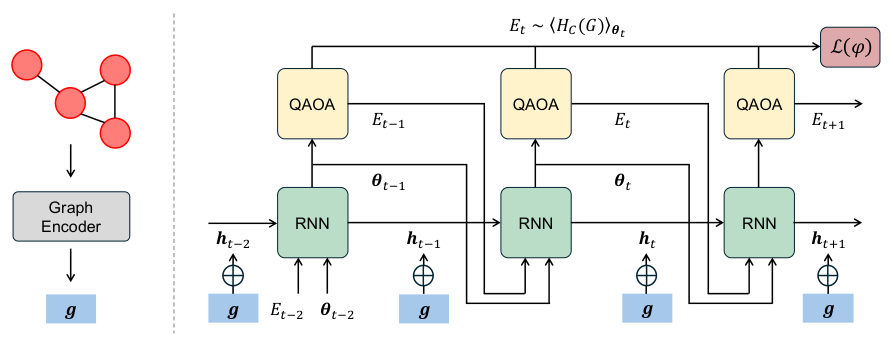
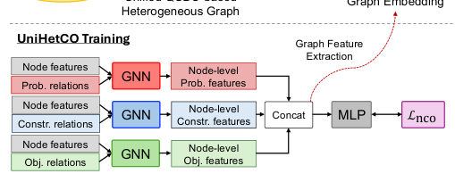
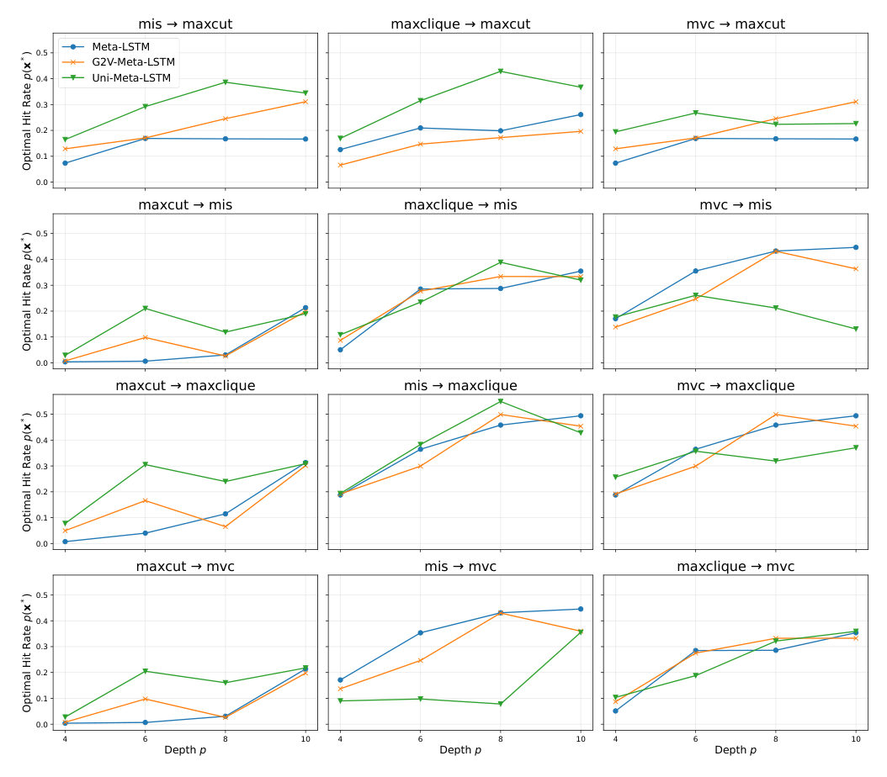
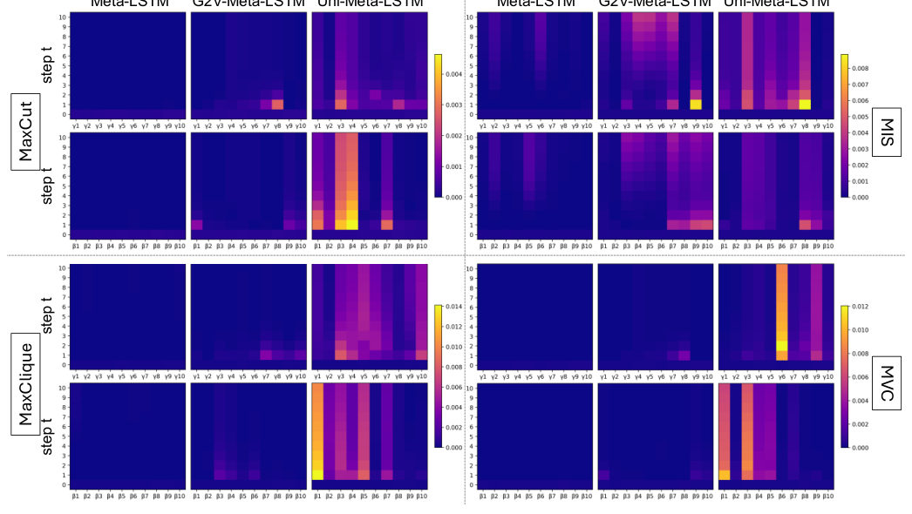
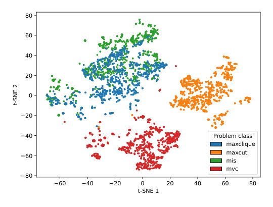
Main problem. The difficulty of efficiently tuning QAOA parameters across different combinatorial optimization problem classes and preventing 'trajectory collapse' in existing meta-optimizers.
Main result. The proposed graph-conditioned meta-optimizer (Uni-Meta-LSTM) achieves superior parameter transferability and higher trajectory diversity across various graph problem types compared to unconditioned or structure-only models.
Method. A neural meta-optimizer (LSTM) is trained end-to-end using differentiable feedback from the QAOA objective, conditioned on problem-aware graph embeddings generated via the UniHetCO framework.
Summary. This paper introduces a new meta-optimizer for the QAOA algorithm that uses graph embeddings to improve how parameters are transferred between different types of optimization problems. By incorporating both the structure of the graph and the specific constraints of the problem into the neural network, the authors prevent the optimizer from producing identical, non-adaptive parameter paths. The method demonstrates significant improvements in finding optimal solutions for problems like MaxCut and Maximum Clique, even when trained on different problem classes. This approach reduces the computational effort required for parameter tuning in variational quantum algorithms.
Model / system. The study focuses on the Quantum Approximate Optimization Algorithm (QAOA) applied to combinatorial problems including MaxCut, Maximum Independent Set, Maximum Clique, and Minimum Vertex Cover, using a cost Hamiltonian derived from quadratic programming formulations.
Key observables. Solution quality (Approximation Ratio, Optimal Hit Rate), Feasibility Rate, Trajectory Diversity (variance of angles), and Optimization Effort (convergence time).
Important parameters / regimes. Circuit depth (p), penalty parameter (lambda), and graph embeddings (g).
Assumptions / limitations. The meta-optimizer generates a short parameter trajectory rather than a full optimization; the framework assumes compatibility with a standard X-mixer Hamiltonian.
Figures summary. Figure 1 compares trajectory diversity between the proposed method and Meta-LSTM; Figure 2 shows the training pipeline; Figure 3 illustrates the UniHetCO encoder; Figure 5 shows heatmaps of parameter variance; Figure 6 presents t-SNE visualizations of the embedding space.
Paper structure. The paper introduces the problem of parameter transferability, presents the UniHetCO graph embedding and the graph-conditioned LSTM architecture, details the training mechanism using differentiable feedback, evaluates performance across multiple problem classes and transfer settings, and discusses limitations regarding circuit depth scaling.
We study parameter transferability for the Quantum Approximate Optimization Algorithm (QAOA) across multiple combinatorial optimization problem classes from a parameter generation perspective. Specifically, a meta-optimizer is trained on one problem class and deployed on another during test time. Prior work employs a Long Short-Term Memory network to emulate QAOA optimization trajectories, but the learned dynamics usually collapse to near-identical paths, limiting cross-problem transfer efficiency. In this paper, we present a problem-aware graph-conditioned meta-optimizer for QAOA that learns to generate parameter trajectories over a fixed horizon, providing strong initializations with only a few steps. The optimizer is conditioned on compact graph embeddings and trained end-to-end using differentiable feedback from the QAOA objective, avoiding the need for ground-truth angles. We evaluate across multiple graph problem classes, including MaxCut, Maximum Independent Set, Maximum Clique, and Minimum Vertex Cover. We report both solution quality and feasibility-aware metrics where constraints apply. Results across a comprehensive empirical study consisting of 64 settings show that the learned optimizer can reduce optimization effort and improve performance over standard initialization, while exhibiting transferable behavior across graph families and problem types.
Authors: Manaka Okuyama, Masayuki Ohzeki
Type: theory · Category: disordered systems and neural networks · PDF: https://arxiv.org/pdf/2604.25697v1
Analysis basis: full PDF text, analyzed in chunks
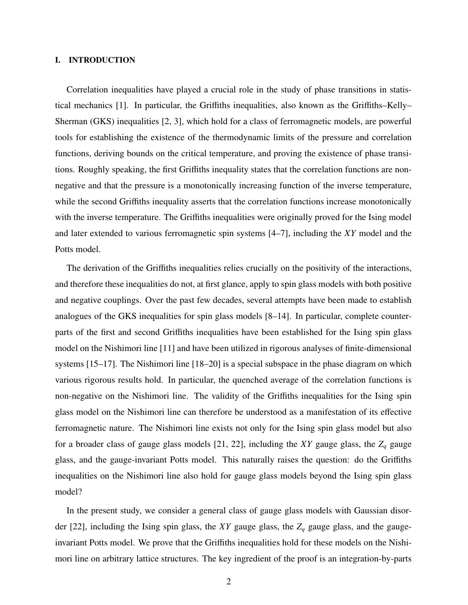
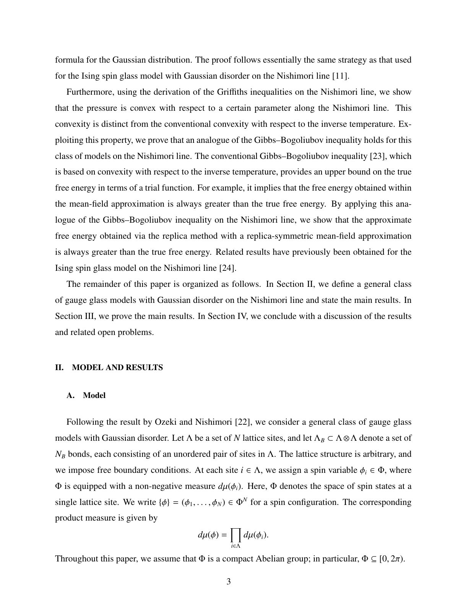
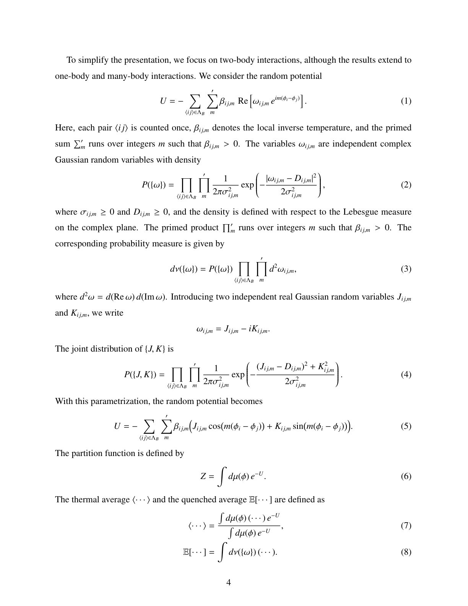
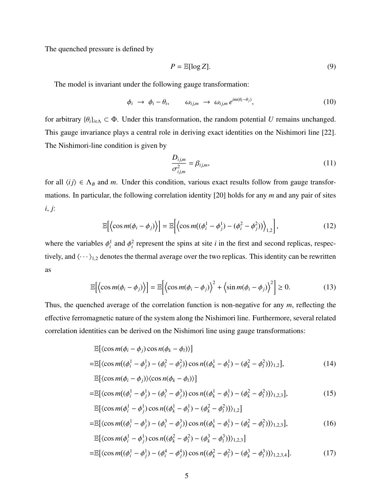
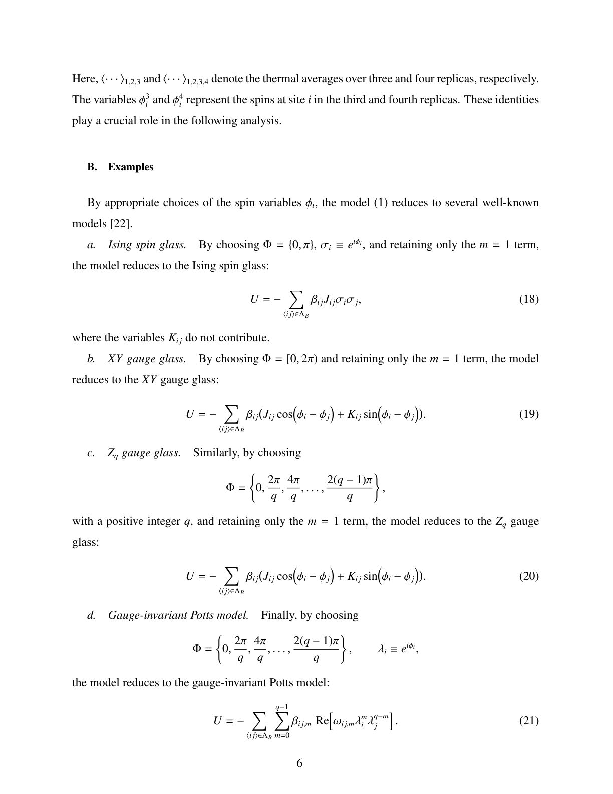
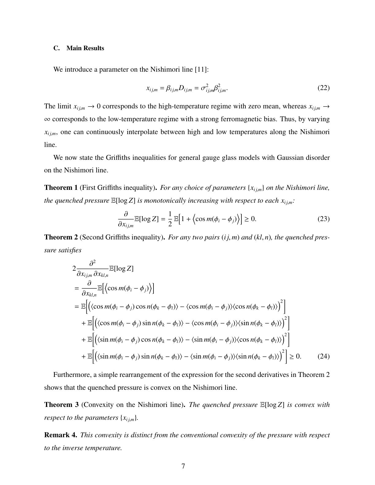
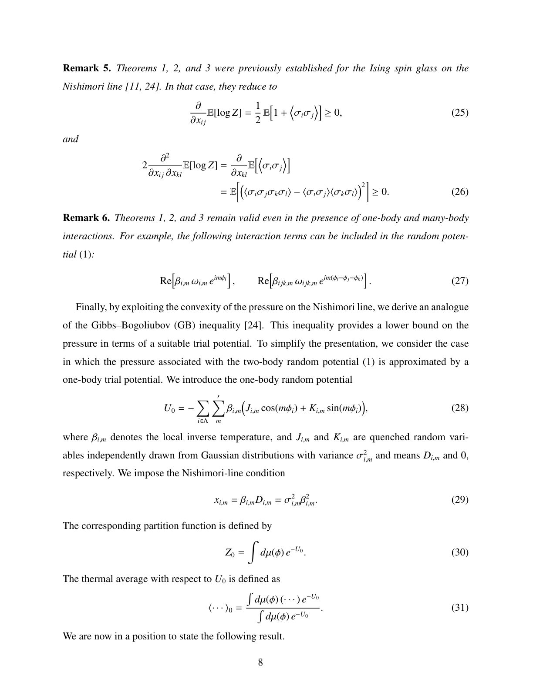
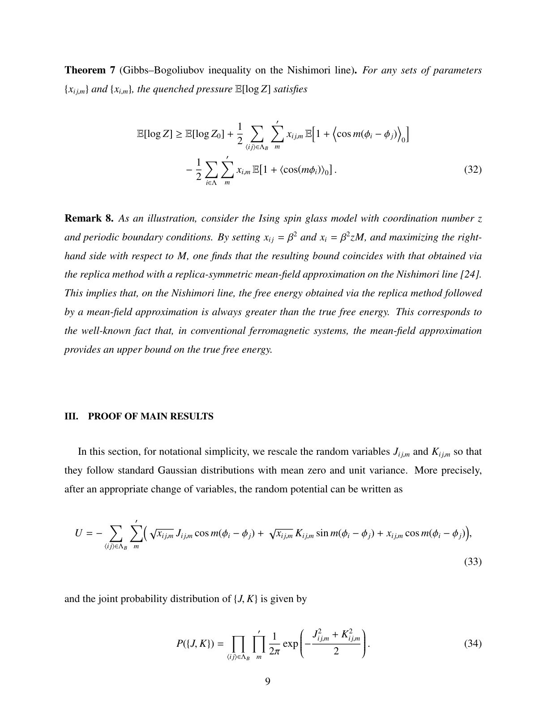
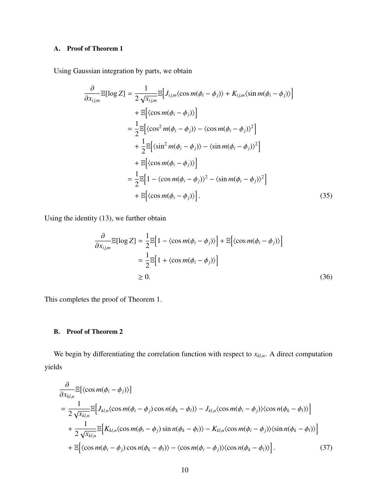
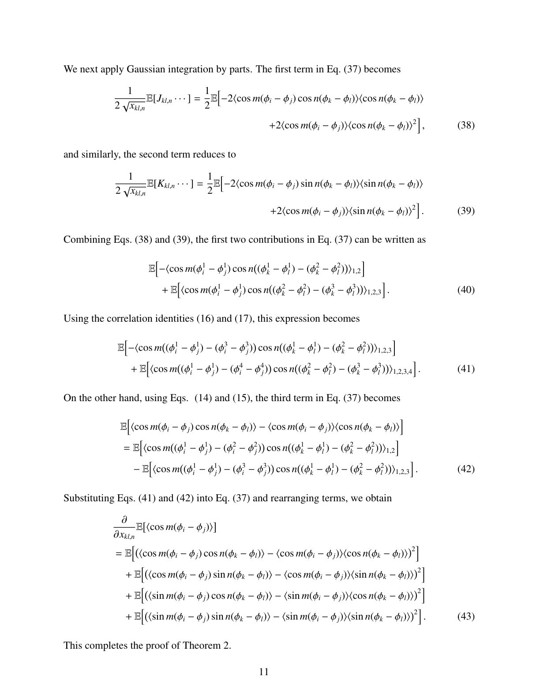
Main problem. The paper aims to extend the validity of Griffiths inequalities and the Gibbs-Bogoliubov inequality from the Ising spin glass to a broader class of gauge glass models.
Main result. The authors prove that the first and second Griffiths inequalities hold for general gauge glass models on the Nishimori line, implying monotonicity of pressure and correlation functions, and establish an analogue of the Gibbs-Bogoliubov inequality.
Method. The proof utilizes Gaussian integration-by-parts, gauge transformations, and the derivation of correlation identities involving multiple replicas.
Summary. This paper provides a mathematical generalization of known properties of the Ising spin glass to a much wider range of gauge glass models. By proving that Griffiths inequalities hold on the Nishimori line, the authors show that certain thermodynamic quantities like pressure and correlations behave monotonically. Additionally, they show that a replica-symmetric mean-field approximation provides an upper bound on the true quenched free energy. This work clarifies the 'effective ferromagnetic nature' of these complex disordered systems under specific temperature constraints.
Model / system. A class of gauge glass models with Gaussian disorder on the Nishimori line, including the Ising spin glass, XY gauge glass, Zq gauge glass, and gauge-invariant Potts model on arbitrary lattice structures.
Key observables. Quenched pressure (E[log Z]), correlation functions, and quenched average of the free energy.
Important parameters / regimes. The Nishimori line condition, local inverse temperature (beta), and the interpolating parameter (x) representing the strength of the ferromagnetic bias.
Assumptions / limitations. The results are restricted to Gaussian disorder and systems constrained to the Nishimori line; the spin space is assumed to be a compact Abelian group.
Paper structure. The paper introduces the general gauge glass model, proves the first and second Griffiths inequalities via differentiation and integration by parts, demonstrates the convexity of the quenched pressure, and concludes by establishing the Gibbs-Bogoliubov inequality and its implications for mean-field theory.
We consider a class of gauge glass models with Gaussian disorder on the Nishimori line, including the Ising spin glass, the $XY$ gauge glass, the $Z_q$ gauge glass, and the gauge-invariant Potts model. We prove that the first and second Griffiths inequalities hold for these models on arbitrary lattice structures. As a consequence, both the pressure and the correlation functions are monotonically increasing with respect to the inverse temperature along the Nishimori line. Furthermore, we establish an analogue of the Gibbs--Bogoliubov inequality for this class of models. This result implies that, on the Nishimori line, the approximate quenched free energy obtained via the replica method with a replica-symmetric mean-field approximation is always greater than the true quenched free energy. Our results provide a broad generalization of previous results established for the Ising spin glass with Gaussian disorder on the Nishimori line.
Authors: Daniel D. Rivera, Gustavo M. Dalpian, John P. Perdew
Type: theory · Category: strongly correlated electrons · PDF: https://arxiv.org/pdf/2604.25125v1
Analysis basis: full PDF text, analyzed in chunks
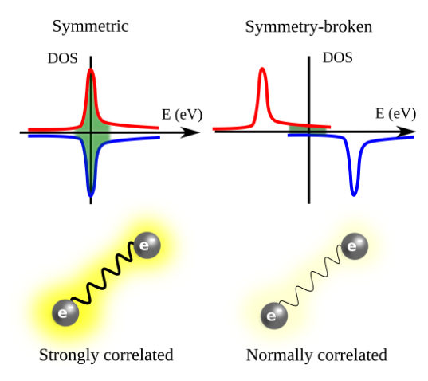
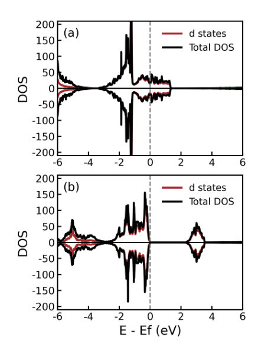
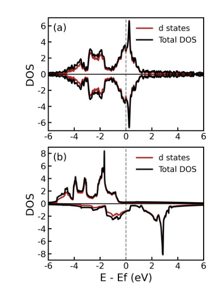
Main problem. Developing a practical, computable indicator to identify strongly correlated electronic systems using only the Kohn-Sham density of one-electron states.
Main result. The authors introduce a correlation parameter (Gamma) based on the density of states at the Fermi level that successfully distinguishes between normally correlated and strongly correlated regimes.
Method. Spin Density Functional Theory (spin-DFT) using the r2SCAN meta-GGA functional within the VASP/PAW framework, comparing symmetric and symmetry-broken configurations.
Summary. This paper proposes a new way to identify strongly correlated materials without needing expensive beyond-DFT methods like DFT+U. By looking at the density of states in a standard Kohn-Sham calculation, the authors show that a specific parameter (Gamma) can predict whether a system will require explicit treatment of electron correlation. The method works by observing how spin symmetry breaking lifts degeneracies, effectively transforming a strongly correlated system into a normally correlated one. This provides a practical diagnostic tool for researchers to determine the reliability of standard DFT for new materials.
Model / system. A diverse set of electronic systems including transition metals (Ni, Fe, Co, Pd, Cu, Ag, Zn, Cd), oxides (NiO, VO2), and rare-earth compounds (EuB6, SmB6, Gd).
Key observables. Correlation parameter (Gamma), energy difference between symmetric and symmetry-broken states (Delta E), and the ratio of density of states at the Fermi level.
Important parameters / regimes. Gamma (ratio of KS DOS to uniform electron gas DOS), Gaussian-smeared Gamma_g, and the energy width (delta) for integrating states around the Fermi level.
Assumptions / limitations. The energy difference between symmetric and symmetry-broken states serves as a proxy for correlation energy; the approach is subject to standard DFT limitations like self-interaction error.
Figures summary. Figure 1 shows how spin symmetry breaking reduces near-degenerate states; Figure 2 and 3 illustrate the reduction of DOS at the Fermi level and band-gap opening in Fe and NiO, respectively; Supplemental figures show DOS changes for various other materials.
Paper structure. The paper introduces the problem of identifying strong correlation, proposes the Gamma parameter, tests it against a wide range of metals and oxides, validates it using a Gaussian-smeared version (Gamma_g), and compares the results to the Stoner criterion and Hubbard model.
Strongly correlated systems have long been a central and highly non-trivial topic in condensed matter physics. At the non-interacting level, strong correlation can be associated with powerful (near) degeneracies between occupied and unoccupied states, which leads to a high density of states near the Fermi level in metallic configurations. Such regimes are commonly treated with beyond-density functional theory (DFT) approaches, such as DFT+U or DFT+DMFT while maintaining symmetric configurations. Here, we explore the hypothesis that symmetry breaking in the Kohn-Sham (KS) non-interacting system can qualitatively account for the energetic effects of strong correlation in the corresponding interacting system within standard DFT. By lifting near-degeneracies around the Fermi level, symmetry breaking diminishes the potential correlation effects, reducing the need for an explicit treatment of electron correlation, transforming an otherwise strongly correlated symmetric configuration into a normally correlated one, thus avoiding the need for interacting methods beyond DFT. This naturally connects nonmagnetic to magnetic states. We apply this idea to both strongly and normally correlated metals and observe that spin symmetry breaking leads to a pronounced reduction of the density of states at the Fermi level and a significant lowering of the total energy in strongly correlated cases. To describe the degree of correlation that the interacting system would have relative to the KS state, we introduce a correlation parameter ($Γ$), defined as the ratio between the Kohn-Sham density of one-electron states at the Fermi level and that of a corresponding uniform electron gas. This parameter distinguishes strongly correlated systems, which would require explicit treatment, from normally correlated ones, which do not.
Authors: Sayam Sethi, Sahil Khan, Aditi Awasthi, Abhinav Anand, Jonathan Mark Baker
Type: theory · Category: quantum information and computing · PDF: https://arxiv.org/pdf/2604.25094v1
Analysis basis: full PDF text, analyzed in chunks
Main problem. In near-term fault-tolerant quantum computing (FTQC) extractor architectures, the 'synthillation' process (combining T-state preparation and injection) is the primary source of error, specifically due to expensive and error-prone inter-module measurements.
Main result. The proposed INJEQT protocol reduces overall error rates by up to 22x and improves wall-clock time by up to 13x by using an auxiliary code to synthesize Rz states with fewer inter-module measurements.
Method. The authors propose a 2-factory design that uses an auxiliary code (like the surface code) to synthesize Rz(theta) states, combined with a pre-fetching strategy to prepare states in parallel to mitigate latency.
Summary. This paper addresses the critical error bottleneck in fault-tolerant quantum computing architectures that rely on 'extractor' modules. By introducing the INJEQT protocol, the authors demonstrate a way to synthesize rotation states in an auxiliary code to minimize the most error-prone inter-module measurements. Their approach significantly reduces both the error budget and the execution time of quantum programs. The results show substantial improvements in efficiency and robustness across different quantum error correction codes and hardware models.
Model / system. The study focuses on extractor-based architectures using qLDPC codes (such as the Gross code) and evaluates performance using Pauli-Based Computing (PBC) models, including lattice surgery and transversal CNOT-based injection.
Key observables. Total program error rate, wall-clock time, physical qubit count, and space-time cost.
Important parameters / regimes. Logical error rates, code distances (d), number of INJEQT factories (R), and precision scales (epsilon_synth) ranging from 10^-8 to 10^-10.
Assumptions / limitations. Assumes the validity of the extractor-based architecture and specific error profiles for inter-module measurements; neglects trivial operations like syndrome extraction due to negligible error contribution.
Figures summary. Figure 1 compares four injection techniques; Figure 2 illustrates two injection techniques; Figure 6 shows the 2-level INJEQT factory process; Figure 7 shows the pre-fetching technique; Figures 8-10 plot improvements in error, time, and space-time metrics for various factory types (Distillation, Cultivation, STAR).
Paper structure. The paper identifies the bottleneck in FTQC architectures, introduces the INJEQT protocol and pre-fetching strategy, provides a theoretical derivation for Rz injection efficiency, evaluates the protocol across various factory types and injection models, and concludes with a robustness analysis.
Near-term FTQC system designs are constrained by limited error budgets and largely sequential execution of non-Clifford gates. As a result, reducing the number of the most-error prone instructions becomes critical for successful program execution. In this work, we study the extractor architecture, a recently proposed FTQC design that enables universal quantum computation on spatially-efficient QEC codes such as the BB code family. In these architectures, over $90\%$ of the total program error arises from the synthillation process, which involves $\lvert T\rangle$-state preparation and injection to implement non-Clifford gates. We observe that standard Rz synthillation requires multiple sequential $\lvert T\rangle$-state injections, each incurring an inter-module measurements, the most expensive instruction in the architecture, which cumulatively dominate the overall error budget. To address this bottleneck, we propose INJEQT, a $2$-factory design that uses an auxiliary code capable of synthesizing $Rz(θ)$ states with lower error rates. These states are then injected into the extractor modules using only a constant number of inter-module measurements. This approach reduces overall error rates by up to $22\times$. We further reduce the time overhead by a pre-fetching strategy that prepares the Rz states and their correction states in parallel. This approach improves the wall-clock time by up to $13\times$ and reduces the space-time cost by up to $7.2\times$, for an optimal choice of the number of INJEQT factories for each metric. We evaluate INJEQT for multiple state preparation techniques such as distillation, cultivation and STAR, and model the execution times for both lattice surgery-based and transversal CNOT based injections. Our results demonstrate that INJEQT is robust across factory choices and device technologies, enabling more efficient architectural designs for FTQC.
Authors: Lipika, Sneh, Shobha Singh, Ralf Koban, Walter Schnelle, Kaustuv Manna
Type: experiment · Category: strongly correlated electrons · PDF: https://arxiv.org/pdf/2604.25365v1
Analysis basis: full PDF text, analyzed in chunks

Main problem. The study aims to investigate the intrinsic physical properties of the magnetic topological semimetal EuAuBi, specifically determining the origin of previously reported superconductivity and uncovering orientation-dependent topological transport signatures.
Main result. The researchers demonstrate that superconductivity in EuAuBi is extrinsic (due to Au2Bi impurities) and identify a new topological Hall effect (THE) signal that emerges in c-axis oriented crystals during metamagnetic transitions.
Method. The study utilizes a Pb-flux growth method to produce high-quality, impurity-free single crystals, followed by characterization via X-ray diffraction, magnetometry (SQUID), and transport measurements (resistivity and Hall effect).
Summary. This paper reports the successful growth of high-quality EuAuBi single crystals using a Pb-flux method, which eliminates Au2Bi impurities responsible for previously reported superconductivity. By using c-axis oriented crystals, the authors discover a topological Hall effect that appears during metamagnetic transitions. The study links electronic transport anomalies to magnetic reconstruction and non-collinear spin textures. These findings highlight how crystal orientation is crucial for observing topological signatures in magnetic semimetals.
Model / system. The physical system is EuAuBi, an antiferromagnetic topological semimetal with a hexagonal crystal structure (space group P63mc) and Eu atoms situated along the c-axis.
Key observables. Electrical resistivity, magnetization, Hall resistivity (including decomposition into ordinary, anomalous, and topological components), specific heat, and magnetoresistance.
Important parameters / regimes. Neel temperature (TN approx 4.8 K), Debye temperature (approx 135 K), and metamagnetic transition fields (approx 2 T and 3 T).
Assumptions / limitations. The analysis assumes that the Hall signal can be decomposed into ordinary, anomalous, and topological components and that the superconductivity in previous studies was due to secondary phases.
Figures summary. Figure 1 shows the crystal structure and evidence of impurities in Bi-flux crystals; Figure 2 displays the high-quality Pb-flux grown crystals and their XRD/Laue patterns; Figure 3 presents magnetization and specific heat data showing the antiferromagnetic transition and metamagnetic features.
Paper structure. The paper begins with crystal growth and structural characterization, moves to the investigation of impurities and the debunking of intrinsic superconductivity, then explores transport properties and the discovery of the orientation-dependent topological Hall effect, and concludes with thermodynamic evidence of magnetic reconstruction.
We report the growth of high-quality single crystals of the magnetic topological semimetal EuAuBi using a Pb flux method, which effectively suppresses the formation of secondary Au2Bi impurity phases that were prevalent in the previously reported Bi flux grown crystals. This growth optimization enables reliable investigation of the intrinsic physical properties of EuAuBi. Importantly, Pb flux growth stablilizes c axis oriented single crystals, enabling Hall measurements in a previously unexplored geometry. In this configuration (I parallel to c, B perpendicular to c), a finite residual Hall contribution, known as topological Hall signal emerges below the antiferromagnetic ordering temperature and within a narrow magnetic field range. This Hall contribution coincides with the metamagnetic transitions, anomalies in magnetoresistance, and an additional feature in field-dependent specific heat, indicating strong coupling between the electronic transport and field induced magnetic reconstructions. Consequently, these findings underscore the significance of crystal orientation in uncovering topological transport signatures in magnetic semimetals such as EuAuBi.
Authors: Sreeraj Rajindran Nair, Christopher Ferrie
Type: theory · Category: quantum information and computing · PDF: https://arxiv.org/pdf/2604.25631v1
Analysis basis: full PDF text, analyzed in chunks
Main problem. The high computational cost of repeated quantum circuit evaluations during the inference phase of Quantum Machine Learning (QML) models.
Main result. The development of a framework for local Tensor-Train (TT) surrogates that provides provable error certificates and statistical guarantees for approximating black-box quantum models.
Method. A combination of Taylor polynomial approximation, Tensor-Train (TT) compression via TT-SVD, and Empirical Risk Minimization (ERM) within local patches of the input space.
Summary. This paper introduces a method to create fast classical 'surrogates' for expensive quantum machine learning models. By using Tensor-Train decomposition and Taylor expansions within local patches of data, the authors create a framework that is much faster than direct circuit evaluation. The method provides mathematical guarantees on the accuracy of these surrogates, effectively separating the complexity of the representation from the complexity of the features. Numerical tests show speedups of up to 400x while maintaining high accuracy.
Model / system. Arbitrary trained quantum machine learning models, such as Variational Quantum Algorithms (VQAs) and Parametrized Quantum Circuits (PQCs), treated as black-box functions mapping classical inputs to expectation values.
Key observables. Expectation values of quantum observables (e.g., Z expectation value), RMSE, and TT/TRUNC error ratios.
Important parameters / regimes. Patch radius (r), polynomial degree (p), TT bond dimension (chi), number of data dimensions (N), and sample size (n).
Assumptions / limitations. The target function is locally smooth and continuously differentiable; the input data is sampled i.i.d. from a distribution supported on a local patch; the quantum model is treated as a black-box.
Figures summary. Figure 1 illustrates the LTTS workflow; Figure 3 shows error decomposition, TT compression error vs. rank, and surrogate RMSE vs. patch radius across different datasets.
Paper structure. The paper identifies the QML inference bottleneck, proposes the LTTS framework, establishes a deterministic error certificate via Taylor-TT construction, provides statistical generalization bounds via ERM, analyzes rank scaling, and validates the method with numerical experiments.
A key bottleneck in quantum machine learning is the computational cost of repeated quantum circuit evaluations during the inference phase. To address this, we present a framework for constructing fast, cheap, provably accurate classical tensor-train surrogates of fully trained quantum machine learning models within local patches of their input data space. The approach combines Taylor polynomial approximation with a tensor-train (TT) representation and embeds it in a statistical learning paradigm via empirical risk minimization. In our analysis, the Taylor-TT construction serves as a deterministic error certificate proving that the TT hypothesis class contains a good approximation; empirical risk minimization then provably recovers a surrogate with controlled generalization error and explicit bounds. This translates into three independently controllable error sources: (i) Taylor truncation error controlled by the patch radius $r$ and polynomial degree $p$, (ii) TT approximation error controlled by the bond dimension $χ$, and (iii) statistical estimation error. While the parameter count scales polynomially in the number of data dimensions $N$, i.e., $d_{\mathrm{eff}} = N(p+1)χ^2$ rather than the naive $(p+1)^N$, the worst-case constants inherit an exponential factor through the tensor-product feature norm during Taylor polynomial embedding onto TT. This cleanly separates representation complexity from feature-induced constants. Our risk bounds and sample complexity depend explicitly on the local patch radius $r$.
Authors: Azin Kazemi-Moridani, Samuele Giuli, Tsung-Han Lee, A. -M. S. Tremblay, Michel Côté, Nicola Lanatà, Olivier Gingras
Type: theory · Category: strongly correlated electrons · PDF: https://arxiv.org/pdf/2604.24848v1
Analysis basis: full PDF text, analyzed in chunks
Main problem. Determining the magnetic phase diagram of the anisotropic triangular Hubbard model and evaluating the accuracy of the ghost-Gutzwiller approximation (ghost-GA) compared to DMFT.
Main result. The ghost-GA achieves near-DMFT accuracy at a fraction of the cost by using auxiliary orbitals to capture dynamical fluctuations, successfully identifying paramagnetic, spiral, and SDW phases while finding that the 1D AFM phase is not stabilized.
Method. The study uses the ghost-Gutzwiller approximation (ghost-GA) combined with a rotating spin-frame formulation for direct total-energy minimization over a high-resolution momentum grid.
Summary. This paper investigates the magnetic phase diagram of the anisotropic triangular Hubbard model using an improved variational method called the ghost-Gutzwiller approximation. By adding 'ghost' orbitals, the authors are able to capture dynamical correlation effects that standard Gutzwiller methods miss, reaching accuracy levels close to much more expensive DMFT calculations. The study maps out various magnetic phases, including spiral and spin-density wave orders, and provides an efficient framework for studying frustrated magnetic systems.
Model / system. The half-filled Hubbard model on an anisotropic triangular lattice, characterized by nearest-neighbor hopping t and diagonal hopping t'.
Key observables. Staggered magnetization (Mq), total energy (Eq), magnetic susceptibility (chi_q), and ordering wavevector (q).
Important parameters / regimes. Interaction strength (U/t), anisotropy/frustration ratio (t'/t), and the number of ghost orbitals (B).
Assumptions / limitations. The analysis is restricted to coplanar magnetic configurations; the ghost-GA is a single-site method that neglects non-local correlations.
Figures summary. Fig 1 shows the lattice geometry; Fig 2 shows electronic dispersions and real-space magnetic phases; Fig 3 presents energy curves and the 1D phase diagram; Fig 4 shows the full 2D phase diagram; Fig 5 displays magnetic susceptibility scans; Fig 7 demonstrates the topological equivalence of lattice representations.
Paper structure. The paper introduces the model and geometry, describes the ghost-GA and rotating spin-frame methodology, presents the phase diagram and energy minimization results, compares the accuracy of GA vs ghost-GA vs DMFT, discusses susceptibility behavior, and concludes with a proof of lattice equivalence.
We investigate the magnetic phase diagram of the half-filled Hubbard model on the anisotropic triangular lattice using the Gutzwiller approximation (GA) and its ghost generalization (ghost-GA). By combining a rotating spin-frame formulation with high-resolution momentum grids, we determine magnetic ground states through direct total-energy minimization over the ordering wavevector. We benchmark standard GA and ghost-GA against dynamical mean-field theory (DMFT) and dual-fermion results. We show that GA already captures the qualitative structure of the phase diagram, but systematically overestimates the stability of magnetic order due to the absence of dynamical fluctuations. We find that introducing a small number of auxiliary ''ghost'' orbitals is sufficient to recover most dynamical effects and significantly improves quantitative agreement with DMFT. Exploring the full Brillouin zone, we obtain a phase diagram comprising paramagnetic and various magnetic phases. In contrast to ladder dual-fermion susceptibility-based predictions, we find that the one-dimensional antiferromagnetic phase is never stabilized, despite being the leading instability in certain regimes. Our results establish ghost-GA as an efficient and systematically improvable framework for studying magnetism in frustrated systems, capable of achieving near-DMFT accuracy at a fraction of the computational cost. They also highlight that standard GA performs qualitatively well for capturing the general phase diagram, enabling the investigation of incommensurate magnetic orders in more complex systems.
Authors: Swayangprabha Shaw, Narayanan Rengaswamy
Type: theory · Category: quantum information and computing · PDF: https://arxiv.org/pdf/2604.25026v1
Analysis basis: full PDF text, analyzed in chunks
Main problem. The non-local stabilizer connections required by high-performance QLDPC codes like Bivariate Bicycle (BB) codes present significant hardware challenges for monolithic processors. This work investigates whether these codes can be effectively implemented in a networked architecture where qubits are distributed across multiple modules.
Main result. The study finds that a networked implementation of BB codes is viable if Bell pair fidelity is maintained at approximately 99% or higher. It also identifies a local gate noise threshold of roughly 1% for these partitioned codes.
Method. The authors use Stim for circuit-level noise simulations and PyMetis for balanced min-cut partitioning of the X-Z Tanner graph. Decoding is performed using Belief Propagation with Ordered Statistics Decoding (BP-OSD) for BB codes and PyMatching for surface codes.
Summary. This paper explores the feasibility of implementing Bivariate Bicycle QLDPC codes in a distributed quantum network. By partitioning the code across two nodes and using Bell-pair-assisted gates, the authors quantify the noise penalty introduced by the network. They demonstrate that while partitioning increases the error rate, the advantage of QLDPC codes can be preserved provided the inter-node entanglement fidelity remains high (above 99%). This provides a roadmap for scaling quantum error correction using modular hardware.
Model / system. A networked quantum architecture consisting of two interconnected nodes. Each node contains a subset of the code's qubits and ancillas, with inter-module operations mediated by teleported CNOT gates using pre-shared Bell pairs.
Key observables. Logical error rate (pL), error thresholds for gate and GHZ noise, and Bell pair demand per syndrome cycle.
Important parameters / regimes. Bell pair fidelity (F_Bell), physical error rate (p), encoding rate, code distance (d), and the number of cut edges (E_cut) in the Tanner graph.
Assumptions / limitations. The noise model assumes stochastic depolarizing errors on all gates, measurements, and resets, and that the network connectivity is limited to the edges defined by the partitioning strategy.
Figures summary. Figure 1 shows the BB code structure and measurement schedule; Figure 2 depicts the networked surface code architecture; Figure 3 illustrates the graph partitioning strategy; Figure 4 and 5 show surface code error thresholds; Figure 6 compares logical error rates for different BB code families.
Paper structure. The paper introduces the challenge of non-local QLDPC codes, establishes a surface code baseline in a networked setting, proposes a partitioning strategy for BB codes, presents circuit-level noise simulations and threshold analyses, and concludes with performance comparisons and future directions.
Quantum low-density parity-check (QLDPC) codes with good parameters are promising candidates for low-overhead fault-tolerant quantum computing, but their non-local stabilizers require long-range connectivity and frequent qubit movement, introducing practical challenges. Prior work has studied the networked implementation of topological codes, where each node only holds one or a few qubits of the entire code, and demonstrated competitive performance under practical constraints such as the quality of network-provided entanglement. However, since these codes are already geometrically local, such a networked setting might not be essential. In this work, we propose and study the networked implementation of better QLDPC codes, specifically bivariate bicycle codes due to their similarity to surface codes and the controlled amount of long-range connections in their stabilizers. We begin by recreating networked surface codes in Stim, with one code qubit per node, and provide additional insights into their circuit-level noise performance. We then extend this approach to bipartitions of bivariate bicycle codes, using balanced min-cut partitioning on their combined X-Z Tanner graph to identify optimal qubit splits. For stabilizers spanning nodes, we implement teleported CNOTs and vary the Bell pair fidelity enabling these gates. Through circuit-level noise simulations with BP-OSD decoding, we provide the first insights into networked realizations of these codes and compare their performance with monolithic implementations. We conclude by outlining advantages, limitations, and future directions.
Authors: R. Ganser, M. P. T. Masilamani, B. Geldiyev, M. M. Hirschmann, A. Consiglio, J. Schusser, D. Di Sante, M. Ünzelmann, F. Reinert
Type: both · Category: strongly correlated electrons · PDF: https://arxiv.org/pdf/2604.25598v1
Analysis basis: full PDF text, analyzed in chunks
Main problem. The difficulty of directly observing and distinguishing true gapless moiré-Dirac quasiparticles from trivial photoemission artifacts in moiré heterostructures.
Main result. Direct spectroscopic evidence of topologically protected, moiré-dressed Dirac nodal lines that can be continuously tuned by adjusting the moiré lattice periodicity.
Method. Angle-resolved photoemission spectroscopy (ARPES) and low-energy electron diffraction (LEED) combined with density functional theory (DFT) and a continuum model analysis.
Summary. This paper reports the discovery of topologically protected Dirac nodal lines in a 1D moiré superlattice formed by AgTe on Ag(111). Using ARPES, the researchers demonstrate that these massless Dirac states are protected by the non-symmorphic glide-mirror symmetry of the superlattice. They show that the electronic structure, including the band gaps and Dirac points, can be continuously controlled by tuning the moiré periodicity through temperature or coverage. This work establishes moiré heterostructures as a versatile platform for engineering and controlling topological electronic states.
Model / system. An epitaxial surface-moiré heterostructure consisting of a compressed AgTe monolayer on an Ag(111) substrate, characterized by a 1D superlattice potential and non-symmorphic glide-mirror symmetry.
Key observables. Band dispersions, band gaps (approx. 160 meV), bandwidth (approx. 200 meV), and moiré reciprocal lattice vectors.
Important parameters / regimes. Moiré lattice periodicity, temperature (40 K to room temperature), and AgTe coverage.
Assumptions / limitations. The use of a modified nearly-free-electron continuum model and a coupled-chain tight-binding toy model to represent the superlattice potential.
Figures summary. Fig 1 shows structural and electronic characterization of flat vs. moiré AgTe; Fig 3 shows ARPES intensity maps at different temperatures/coverages and a plot of universal scaling behavior for the energy gap and valence band maximum.
Paper structure. The paper introduces the moiré system, presents structural and electronic characterization, details the spectroscopic observation of Dirac states, provides symmetry-based topological analysis, demonstrates tunability via temperature and coverage, and concludes with scaling laws.
Moiré heterostructures provide a powerful framework for tailoring electronic band structures via controlled long-range periodic superlattice potentials. Beyond widely studied moiré-tailored flat bands, folded band structures can host emergent Dirac states, which have recently attracted considerable interest. Direct momentum-resolved observation of gapless moiré-Dirac quasiparticles, however, is challenging and has so far remained elusive. By performing angle-resolved photoemission spectroscopy measurements on an epitaxial surface-moiré structure, we here provide direct spectroscopic evidence of moiré-dressed Dirac states with topological character. Driven by the one-dimensional superlattice potential, electrons propagate anisotropically with a weak but massless Dirac dispersion along the confinement direction. The observed band crossings belong to topological nodal lines pinned to the mini-Brillouin zone boundaries. As such, they are enforced and robustly protected by the non-symmorphic symmetry of the superlattice. Finally, we demonstrate that the topological excitations can be almost continuously controlled by tuning the moiré lattice periodicity, directly unveiling moiré heterostructures as a promising platform for creating and controlling topological moiré-Dirac states.
Authors: Sayantan Pramanik, M Girish Chandra
Type: theory · Category: quantum information and computing · PDF: https://arxiv.org/pdf/2604.25613v1
Analysis basis: full PDF text, analyzed in chunks
Main problem. The paper addresses the open question of whether the Rotosolve algorithm, a popular coordinate-descent method for training parametrized quantum circuits, possesses formal convergence guarantees.
Main result. The authors prove that Rotosolve converges to epsilon-stationary points in non-convex smooth landscapes and to epsilon-suboptimal points under the Polyak-Lojasiewicz condition, providing explicit worst-case convergence rates.
Method. The study uses a rigorous mathematical analysis of the trigonometric structure of the objective function, comparing Rotosolve's performance and shot-complexity against RCD, SGD, SPSA, and RSGF.
Summary. This paper provides the first formal convergence guarantees for the Rotosolve algorithm used in training variational quantum circuits. It proves that the algorithm is effective in both non-convex and PL-condition landscapes, even in the presence of finite-shot noise. The authors demonstrate that Rotosolve is hyperparameter-free and can outperform standard gradient-based methods like SGD in quantum machine learning tasks. This work turns a previously heuristic optimization method into a mathematically grounded tool for quantum computing.
Model / system. The study focuses on Variational Quantum Algorithms (VQAs) using parametrized quantum circuits where the objective function is the expectation value of a Hermitian observable.
Key observables. The expectation value of a Hermitian observable H, and the gradient norm for stationarity.
Important parameters / regimes. The number of parameters d, the noise variance sigma^2 in the finite-shot regime, and the Polyak-Lojasiewicz constant mu.
Assumptions / limitations. Assumes the objective function is coordinate-wise smooth, the estimator is unbiased with bounded variance, and the landscape satisfies the Polyak-Lojasiewicz condition almost everywhere.
Figures summary. Figure 1(a) shows training loss vs. iterations for various optimizers, and Figure 1(b) shows training loss vs. number of circuit executions, demonstrating Rotosolve's efficiency.
Paper structure. The paper defines the Rotosolve algorithm and its trigonometric basis, proves convergence theorems for stationary and suboptimal points, compares complexity with RCD, and validates findings via QML numerical experiments.
In this paper, we resolve an open question in the field of optimization algorithms for training parametrized quantum circuits: Does the popular Rotosolve algorithm converge? Until now, interpolation-based coordinate descent methods such as Rotosolve have mostly been treated as heuristics, lacking any formal convergence guarantees. We rigorously analyze Rotosolve, and show that it converges to $\varepsilon$-stationary points if the optimization landscape is non-convex and smooth; and to $\varepsilon$-suboptimal points if the objective function additionally obeys the Polyak-Lojasiewicz (PL) condition. Further, we derive explicit worst-case rates of convergence in the finite quantum measurement regime. These rates are contrasted against those from a similar coordinate-based method: Randomized Coordinate Descent (RCD). Although in the worst case their rates are, prima facie, equivalent, we present arguments for a more nuanced comparison between the two. We highlight that Rotosolve is hyperparameter-free, and implicitly uses first and second derivatives in its updates. Finally, we supplement our theoretical findings with numerical experiments from Quantum Machine Learning; and compare the performance of Rotosolve against RCD, Stochastic Gradient Descent, Simultaneous Perturbation Stochastic Approximation, and Randomized Stochastic Gradient Free methods.
Authors: Ryohei Oishi, Kazunori Umeo, Takuya Aoyama, Takahiro Onimaru, Kaya Kobayashi
Type: experiment · Category: strongly correlated electrons · PDF: https://arxiv.org/pdf/2604.25282v1
Analysis basis: full PDF text, analyzed in chunks
Main problem. Investigation of the piezomagnetic (PZM) effect in the rare-earth-based g-wave altermagnet TbPt6Al3 and understanding the origin of its exceptionally large PZM coefficient.
Main result. The study observes a linear PZM effect with a coefficient Q11 that is over two orders of magnitude larger than in other altermagnets, attributed to the strong relativistic spin-orbit coupling of Tb3+ 4f electrons.
Method. Magnetization measurements were performed on single-crystalline samples under uniaxial stress using a superconducting magnetometer and a custom-made pressure cell.
Summary. This paper reports the discovery of an exceptionally large linear piezomagnetic effect in the altermagnet TbPt6Al3. The observed PZM coefficient is more than 100 times larger than those found in transition-metal-based altermagnets. The researchers attribute this massive response to the strong relativistic spin-orbit coupling inherent in the 4f electrons of the terbium ions. This finding provides new insight into how heavy rare-earth elements can be used to enhance magneto-elastic responses in altermagnetic materials.
Model / system. The system is TbPt6Al3, a rare-earth-based g-wave altermagnet with a trigonal structure (space group 3-bar c) and collinear antiferromagnetic order.
Key observables. Piezomagnetic coefficient (Q11), Néel temperature (TN), critical exponent (beta), and magnetization (M) under uniaxial stress.
Important parameters / regimes. PZM coefficient Q11 = 9.1 x 10^-3 mu_B/(f.u. MPa) at 2 K; TN = 3.32 K; critical exponent beta = 0.28; poling field = 10,000 Oe.
Assumptions / limitations. Assumes the observed magnetization change is due to the PZM effect and that the single-domain state is achieved via the described poling process.
Paper structure. The paper introduces the material and the PZM effect, describes the experimental setup for applying uniaxial stress, presents the temperature and stress dependence of magnetization, analyzes the critical exponent, and concludes with a discussion on the role of spin-orbit coupling.
We have investigated the piezomagnetic (PZM) effect of the rare-earth-based g-wave altermagnet TbPt6Al3 by magnetization measurements of single-crystalline samples under uniaxial stress sigma. The magnetization in magnetic field along the trigonal a axis increases linearly with sigma for T < TN, indicating the emergence of PZM effect, while the theoretically predicted nonlinear PZM effect was not observed. PZM coefficient of Q11 at 2 K is obtained as 9.1 times 10^-3 mu_B/(f.u. MPa), which is larger by more than two orders of magnitude than those for other altermagnets and noncollinear antiferromagnets. Temperature dependence of Q11 below TN yielded the critical component beta as 0.28, whose value is close to that of the magnetic moment estimated by the neutron powder diffraction. We propose that the large Q11 and the large poling field of 10000 Oe to achieve the single-domain state in TbPt6Al3 are due to the strong relativistic spin-orbit coupling of the 4f electrons in the Tb3+ ions.
Authors: Lorenzo Bastonero, Gabriel Joalland, Chiara Cignarella, Lorenzo Monacelli, Nicola Marzari
Type: theory · Category: disordered systems and neural networks · PDF: https://arxiv.org/pdf/2604.25756v1
Analysis basis: full PDF text, analyzed in chunks
Main problem. Accurately predicting crystal thermodynamics and challenging phase transitions in materials with strong anharmonicity is computationally expensive due to the massive number of DFT evaluations required.
Main result. The authors developed an on-the-fly Bayesian active learning framework that reduces the DFT workload by 98.4-99.8% while maintaining first-principles accuracy, successfully predicting the phase transition temperature of CsPbI3.
Method. An iterative active learning workflow combining the Stochastic Self-Consistent Harmonic Approximation (SSCHA) with Sparse Gaussian Process (SGP) machine learning potentials using ACE descriptors.
Summary. This paper presents a new machine learning-driven approach to accelerate the study of materials undergoing complex phase transitions. By using Bayesian active learning, the researchers can train highly accurate interatomic potentials using only a tiny fraction of the computational cost typically required by first-principles methods. The method successfully captures the temperature-dependent stability of perovskites, which is crucial for developing stable solar cells and batteries. This framework provides a scalable way to explore the thermodynamic landscapes of materials under realistic, high-temperature conditions.
Model / system. The study focuses on materials with significant anharmonicity, specifically Li2O (a superionic conductor) and CsPb and CsPbI3 (metal-halide perovskites) in their alpha and delta phases.
Key observables. Gibbs free energy difference, phase transition temperature, phonon dispersions, equilibrium volume, and thermal expansion coefficient.
Important parameters / regimes. Temperature (250-450 K for CsPbI3), pressure (ambient), and uncertainty thresholds for active learning selection.
Assumptions / limitations. The nuclear density matrix is assumed to be representable as a multivariate Gaussian.
Figures summary. Figure 1 shows the active learning workflow (ensemble generation, uncertainty selection, and DFT labeling); Figure 2 illustrates SSCHA calculations and temperature ranges; Figure 3(b) displays the Gibbs free energy difference vs. temperature to identify the phase transition.
Paper structure. The paper introduces the problem of anharmonicity, presents the Bayesian active learning framework integrated with SSCHA, demonstrates efficiency and accuracy on Li2O and CsPbI3, and provides a detailed hyperparameter optimization analysis.
Materials underpin modern technologies, from energy harvesting, storage, and conversion to information and communication technologies. Their functionality is often governed by the interplay between competing phases, as thermodynamic behavior shapes microscopic properties and ultimately determines technological performance; for instance, the light absorption of inorganic metal-halide perovskites in solar cells. Accurately predicting crystal thermodynamics, however, remains a major challenge for computational approaches because strong anharmonic effects require extensive sampling of the potential energy surface. Here, we present an on-the-fly Bayesian framework, combined with the stochastic self-consistent harmonic approximation, for learning first-principles interatomic potentials. This approach enables the prediction of thermodynamic properties over a broad temperature range with first-principles accuracy while requiring training on only a few tens to a few hundreds of atomic configurations. To demonstrate its power, we investigate the thermodynamic and dynamical properties of Li$_2$O, $α$-CsPbI$_3$, and $δ$-CsPbI$_3$, requiring only 44, 256, and 50 total-energy calculations, respectively. Notably, we show that this framework accurately captures the phase diagram of CsPbI$_3$, which explains its spontaneous degradation into the non-absorbing yellow phase, predicting the transition temperature with remarkable accuracy and efficiency. More broadly, the method presented opens a novel route toward accelerated materials engineering under realistic conditions for a wide range of technologically relevant applications, including solid-state batteries, optoelectronic devices, and memristors.
Authors: Domenico D'Alessandro, Phattharaporn Singkanipa, Daniel Lidar
Type: theory · Category: quantum information and computing · PDF: https://arxiv.org/pdf/2604.25807v1
Analysis basis: full PDF text, analyzed in chunks
Main problem. The paper seeks to provide a rigorous mathematical proof for the claimed error scaling of Universally Robust (URn) dynamical decoupling sequences, specifically proving that for even n, the fidelity error scales as O(epsilon^n).
Main result. The authors establish that the URn phase prescription satisfies the necessary and sufficient conditions to cancel error coefficients up to order n-1, and they identify the specific leading-order error term at order epsilon^n.
Method. The work employs a Taylor series expansion of the Hilbert-Schmidt overlap, using algebraic tools like trace identities, matrix-product generating functions, and Fourier-type identities to prove the vanishing of error coefficients.
Summary. This paper provides the first rigorous mathematical proof that Universally Robust (URn) dynamical decoupling sequences achieve high-order error suppression. By analyzing the Taylor expansion of the quantum fidelity, the authors prove that for even-length sequences, error coefficients are cancelled up to order n-1. This establishes that the fidelity error scales as O(epsilon^n). The work also identifies the specific mathematical structure responsible for this robustness and shows that the error cannot be suppressed beyond order n.
Model / system. The study uses an effective pulse-cycle model for quantum information processing, involving a sequence of n imperfect pulses separated by free evolution periods, where pulses are characterized by an error parameter epsilon and controlled phases.
Key observables. Fidelity (F) and the normalized Hilbert-Schmidt overlap (G(epsilon)).
Important parameters / regimes. Error parameter epsilon, number of pulses n (even), control phases phi_k, and rotation angles alpha and beta.
Assumptions / limitations. The sequence length n is an even integer; the environment's correlation time is longer than the sequence duration (coherent evolution); and pulses are identical except for controlled phase shifts.
Paper structure. The paper begins by defining the URn problem and the pulse model, then moves to establishing necessary and sufficient conditions for coefficient cancellation via Taylor expansion, followed by the use of combinatorial and Fourier-type identities to prove the vanishing of specific error terms, and concludes by identifying the non-vanishing leading-order error.
Why it may be interesting. This provides the fundamental mathematical foundation for a class of robust control sequences used to protect qubits from noise, which is critical for scaling quantum computing and improving the coherence of quantum sensors.
Universally robust dynamical decoupling (UR$n$) sequences were proposed to compensate pulse imperfections arising from arbitrary experimental parameters while achieving high-order error suppression with only a linear increase in the number of pulses. Although their performance was supported by analytical arguments, numerical simulations, and experiments, a complete mathematical proof of the claimed order of error compensation has been absent. In this work, we present a rigorous proof for UR$n$ DD sequences with even $n$. Using a series expansion of a quantity whose modulus is the fidelity $F$, we derive necessary and sufficient conditions for the cancellation of its coefficients up to, but not including, order $n$. The UR$n$ phase prescription satisfies these conditions, and therefore $1-F=O(ε^n)$. Our results establish the UR$n$ construction on firm analytical grounds and clarify the structure responsible for its high-order robustness.
← Index · ← Previous · Next →